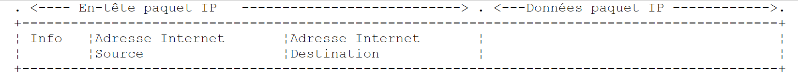
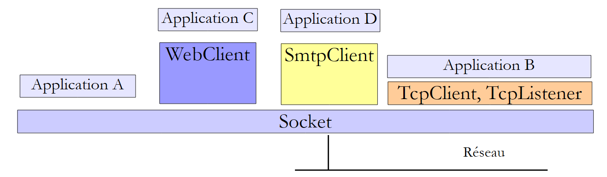
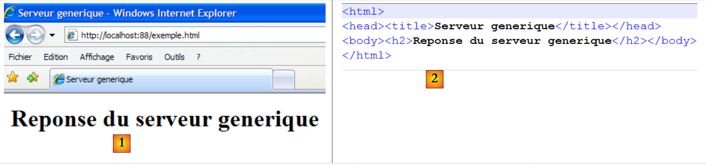
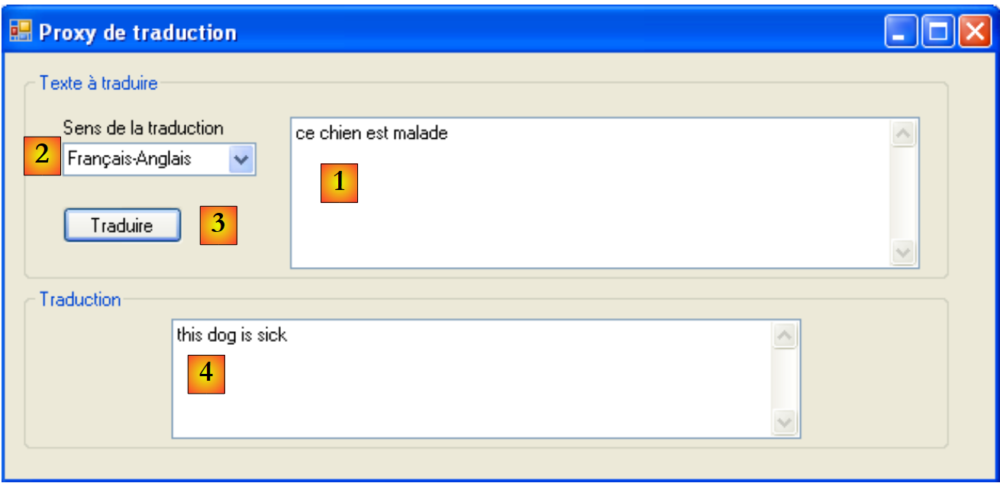
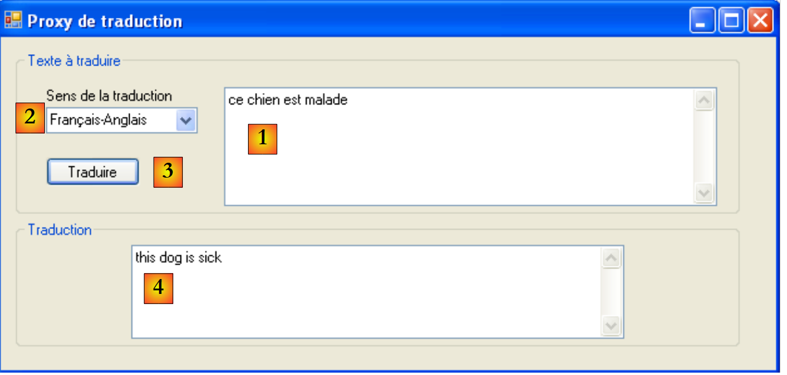

11. Programación en Internet
11.1. General
11.1.1. Los protocolos de Internet
A continuación ofrecemos una introducción a los protocolos de comunicación de Internet, también conocidos como el conjunto de protocolos TCP/IP (Protocolo de Control de Transmisión / Protocolo de Internet), que recibe su nombre de los dos protocolos principales. Puede resultar útil para el lector tener una comprensión general de cómo funcionan las redes y, en particular, de los protocolos TCP/IP, antes de abordar la construcción de aplicaciones distribuidas. El siguiente texto es una traducción parcial de un texto que se encuentra en el documento «Lan Workplace for Dos - Administrator's Guide» de NOVELL, documento de principios de los años 90.
El concepto general de crear una red de ordenadores heterogéneos proviene de la investigación llevada a cabo por la DARPA (Agencia de Proyectos de Investigación Avanzada de Defensa) en EE. UU. La DARPA desarrolló el conjunto de protocolos conocido como TCP/IP, que permite que máquinas heterogéneas se comuniquen entre sí. Estos protocolos se han probado en una red llamada ARPAnet, red que más tarde se convirtió en INTERNET. Los protocolos TCP/IP definen formatos y reglas de transmisión y recepción que son independientes de la organización de la red y del hardware utilizado.
La red diseñada por la DARPA y gestionada por los protocolos TCP/IP es una red de conmutación de paquetes de la DARPA. Este tipo de red transmite la información a través de la red en pequeños fragmentos llamados paquetes. Así, si un ordenador transmite un archivo de gran tamaño, este se dividirá en fragmentos más pequeños, que se enviarán a través de la red para ser recomponidos en su destino. El TCP/IP define el formato de estos paquetes, es decir:
- origen del paquete
- destino
- longitud
- tipo
11.1.2. El modelo OSI
Los protocolos TCP/IP siguen, a grandes rasgos, el modelo de red abierta denominado OSI (Modelo de Referencia de Interconexión de Sistemas Abiertos) definido por la ISO (Organización Internacional de Normalización). Este modelo describe una red ideal en la que la comunicación entre máquinas puede representarse mediante un modelo de siete capas:
 |
Cada capa recibe servicios de la capa inferior y ofrece los suyos propios a la capa superior. Supongamos que dos aplicaciones en máquinas diferentes, A y B, quieren comunicarse: lo hacen en la capa de aplicación. No necesitan conocer todos los detalles del funcionamiento de la red: cada aplicación entrega la información que desea transmitir a la capa inferior: la de presentación. La aplicación solo necesita conocer las reglas para interactuar con la capa de presentación.
Una vez que la información de la presentación se ha transferido a la sesión, y así sucesivamente, hasta que llega al soporte físico y se transmite físicamente al equipo de destino. Allí se somete al proceso inverso al que se sometió en el equipo emisor.
En cada capa, el proceso de envío responsable de enviar la información la envía a un proceso de recepción en la otra máquina que pertenece a la misma capa que él. Lo hace de acuerdo con ciertas reglas conocidas como el protocolo de capa. Esto nos da el siguiente diagrama de comunicación final:
 |
La función de las diferentes capas es la siguiente:
Garantiza la transmisión de bits en un medio físico. Esta capa incluye equipos terminales de procesamiento de datos (E.T.T.D.), como un terminal o un ordenador, así como equipos de terminación de circuitos de datos (E.T.C.D.), como un modulador/demodulador, un multiplexor o un concentrador. Los puntos de interés en este nivel son:
| |
Oculta las características de la capa física. Detecta y corrige los errores de transmisión. | |
Gestiona la ruta que sigue la información enviada a través de la red. Esto se denomina enrutamiento: determinar la ruta que debe seguir un dato para llegar a su destino. | |
Permite la comunicación entre dos aplicaciones, mientras que las capas anteriores solo permitían la comunicación entre máquinas. Un servicio que ofrece esta capa es la multiplexación: la capa de transporte puede utilizar la misma conexión de red (de máquina a máquina) para transmitir información perteneciente a varias aplicaciones. | |
Esta capa contiene servicios que permiten a una aplicación abrir y mantener una sesión de trabajo en una máquina remota. | |
Su objetivo es estandarizar la representación de los datos en diferentes máquinas. De este modo, los datos de la máquina A serán «presentados» por la capa de Presentación de la máquina A, en un formato estándar, antes de ser enviados a través de la red. Una vez que lleguen a la máquina B, que los reconocerá gracias a su formato estándar, serán presentados de otra forma para que la aplicación de la máquina B pueda reconocerlos. | |
En este nivel, encontramos aplicaciones que suelen estar más cerca del usuario, como el correo electrónico y la transferencia de archivos. |
11.1.3. El modelo TCP/IP
El modelo OSI es un modelo ideal que aún no se ha materializado. El conjunto de protocolos TCP/IP se aproxima a él de la siguiente forma:
 |
Capa física
Para las redes de área local, solemos utilizar Ethernet o Token-Ring. Aquí solo presentamos la tecnología Ethernet.
Ethernet
Este es el nombre que se le da a una tecnología LAN de conmutación de paquetes inventada en el PARC de Xerox a principios de la década de 1970 y estandarizada por Xerox, Intel y Digital Equipment en 1978. La red consiste físicamente en un cable coaxial con un diámetro de alrededor de 1,27 cm y una longitud máxima de 500 m. Se puede ampliar mediante repetidores, sin que dos máquinas puedan estar separadas por más de dos repetidores. El cable es pasivo: todos los elementos activos se encuentran en los equipos conectados al cable. Cada equipo está conectado al cable mediante una tarjeta de acceso a la red que comprende:
- un transmisor (transceptor) que detecta la presencia de señales en el cable y convierte las señales analógicas en digitales y viceversa.
- un acoplador que recibe señales digitales del transmisor y las transmite al ordenador para su procesamiento, o viceversa.
Las principales características de la tecnología Ethernet son las siguientes:
- Capacidad de 10 megabits por segundo.
- Topología de bus: todos los equipos están conectados al mismo cable
 |
- Red de difusión: un equipo emisor transmite información por el cable indicando la dirección del equipo de destino. A continuación, todos los equipos conectados reciben esta información, y solo el destinatario la retiene.
- El método de acceso es el siguiente: el transmisor que desea transmitir escucha el cable; a continuación, detecta la presencia o ausencia de una onda portadora, lo que significaría que hay una transmisión en curso. Se trata del CSMA (Carrier Sense Multiple Access, acceso múltiple con detección de portadora). En ausencia de una portadora, un transmisor puede decidir transmitir a su vez. Varios transmisores pueden tomar esta decisión. Las señales transmitidas se mezclan: se dice que hay una colisión. El transmisor detecta esta situación: al mismo tiempo que transmite por el cable, escucha lo que realmente está pasando por él. Si detecta que la información que transita por el cable no es la que él ha transmitido, deduce que hay una colisión y deja de transmitir. Los demás transmisores harán lo mismo. Cada uno reanudará la transmisión tras un tiempo aleatorio que depende de cada transmisor. Esta técnica se denomina CD (Collision Detect). El método de acceso se denomina CSMA/CD.
- Direccionamiento de 48 bits. Cada máquina tiene una dirección, denominada aquí dirección física, que está escrita en la tarjeta que la conecta al cable. Esta dirección se denomina Ethernet de la máquina.
Capa de red
Esta capa incluye los protocolos IP, ICMP, ARP y RARP.
Transmite paquetes entre dos nodos de red | |
El ICMP permite la comunicación entre el programa del protocolo IP de un equipo y el de otro. Por lo tanto, es un protocolo de intercambio de mensajes dentro del protocolo IP. | |
asigna la dirección de Internet de un equipo a la dirección física del mismo | |
asigna la dirección física de un equipo a la dirección de Internet del mismo |
Capas de transporte/sesión
Esta capa incluye los siguientes protocolos:
Garantiza una transferencia fiable de información entre dos clientes | |
Garantiza la entrega no fiable de información entre dos clientes |
Capas de aplicación, presentación y sesión
Existen aquí varios protocolos:
Emulador de terminal que permite a la máquina A conectarse a la máquina B como un terminal | |
permite la transferencia de archivos | |
permite la transferencia de archivos | |
permite el intercambio de mensajes entre usuarios de la red | |
transforma el nombre de un equipo en una dirección de Internet | |
creado por Sun Microsystems, especifica un estándar de representación de datos independiente del equipo | |
también definido por Sun, es un protocolo de comunicación entre aplicaciones remotas, independiente de la capa de transporte. Este protocolo es importante: libera al programador del conocimiento de los detalles de la capa de transporte y hace que las aplicaciones sean portables. Este protocolo se basa en el protocolo XDR | |
, también definido por Sun, este protocolo permite que una máquina «vea» el sistema de archivos de otra. Se basa en el protocolo RPC anterior |
11.1.4. Cómo funcionan los protocolos de Internet
Las aplicaciones desarrolladas en el entorno TCP/IP suelen utilizar varios de los protocolos de este entorno. Un programa de aplicación se comunica con la capa de protocolo más alta. Esta transmite la información a la capa inferior, y así sucesivamente hasta llegar al medio físico. Aquí, la información se transfiere físicamente a la máquina, donde vuelve a pasar por las mismas capas, esta vez en sentido contrario, hasta llegar a la aplicación a la que se ha enviado la información. El siguiente diagrama muestra la ruta de la información:
 |
Veamos un ejemplo: la aplicación FTP, definida en la aplicación que permite la transferencia de archivos entre máquinas.
- La aplicación envía una secuencia de bytes que se va a transmitir a la capa de transporte.
- La capa de transporte divide esta secuencia de bytes en segmentos TCP y añade el número de segmento al principio de cada segmento. Los segmentos se pasan a la capa de red, regulada por el IP.
- La capa IP crea un paquete que encapsula el segmento TCP recibido. En la cabecera de este paquete, coloca las direcciones de Internet de las máquinas de origen y destino. También determina la dirección física de la máquina de destino. Todo esto se transmite a la capa de enlace de datos y a la capa física, es decir, a la tarjeta de red que conecta la máquina a la red física.
- Aquí, el paquete IP se encapsula a su vez en una trama y se envía a su destinatario a través del cable.
- En la máquina receptora, el enlace de datos y el enlace físico hacen lo contrario: desencapsulan el paquete IP de la trama física y lo pasan a la capa IP.
- La capa IP comprueba que el paquete sea correcto: calcula una suma basada en los bits recibidos (suma de comprobación), que debe encontrarse en la cabecera del paquete. Si no es así, el paquete es rechazado.
- Si el paquete se declara correcto, la capa IP desencapsula el segmento TCP que contiene y lo pasa a la capa de transporte IP.
- La capa de transporte, la capa TCP en nuestro ejemplo, examina el número de segmento para restablecer el orden correcto de los segmentos.
- También calcula una suma de comprobación para el segmento TCP. Si se comprueba que es correcto, la capa TCP envía un acuse de recibo a la máquina de origen; de lo contrario, el segmento TCP es rechazado.
- Lo único que le queda por hacer a la capa TCP es transmitir la parte de datos del segmento a la aplicación de destino en la capa superior.
11.1.5. Solución de problemas en Internet
Un nodo de una red puede ser un ordenador, una impresora inteligente, un servidor de archivos; de hecho, cualquier cosa que pueda comunicarse utilizando los protocolos TCP/IP. Cada nodo tiene una dirección física cuyo formato depende del tipo de red. En una red Ethernet, la dirección física se codifica en 6 bytes. Una dirección de red X25 es un número de 14 dígitos.
La dirección de Internet de un nodo es una dirección lógica: es independiente del hardware y de la red utilizados. Se trata de una dirección de 4 bytes que identifica tanto una red local como un nodo de dicha red. La dirección de Internet se representa habitualmente como 4 números, los valores de los 4 bytes, separados por un punto. Por ejemplo, la dirección de la máquina Lagaffe de la Facultad de Ciencias de Angers es 193.49.144.1, y la de la máquina Liny es 193.49.144.9. De ello se deduce que la dirección de Internet de la red local es 193.49.144.0. En esta red podemos tener hasta 254 nodos.
Dado que las direcciones de Internet o IP son independientes de la red, un equipo de la red A puede comunicarse con un equipo de la red B independientemente del tipo de red en la que se encuentre: solo necesita conocer su dirección IP. El protocolo IP de cada red se encarga de la conversión entre la dirección IP y la dirección física, en ambas direcciones.
Todas las direcciones IP deben ser diferentes. En Francia, el INRIA es el responsable de asignar las direcciones IP. De hecho, esta organización asigna una dirección a su red local, por ejemplo, 193.49.144.0 para la red de la Facultad de Ciencias de Angers. El administrador de la red puede entonces asignar las direcciones IP 193.49.144.1 a 193.49.144.254 como considere oportuno. Esta dirección suele escribirse en un archivo especial en cada máquina conectada a la red.
11.1.5.1. Clases de direcciones IP
Una dirección IP es una secuencia de 4 bytes, a menudo denominada I1.I2.I3.I4, que en realidad contiene dos direcciones:
- dirección de red
- la dirección de un nodo en esta red
En función del tamaño de estos dos campos, las direcciones IP se dividen en tres clases: clases A, B y C.
Clase A
La dirección IP: I1.I2.I3.I4 tiene la forma R1.N1.N2.N3, donde
R1 es la dirección de red
N1.N2.N3 es la dirección de un equipo de esta red
Más concretamente, el formato de una dirección IP de clase A es el siguiente:
La dirección de red tiene 7 bits y la dirección de nodo tiene 24 bits. Por lo tanto, podemos tener 127 redes de clase A, cada una con hasta 224 nodos.
Clase B
En este caso, la dirección IP: I1.I2.I3.I4 tiene la forma R1.R2.N1.N2, donde
R1.R2 es la dirección de red
N1.N2 es la dirección de un equipo de esta red
Más concretamente, el formato de una dirección IP de clase B es el siguiente:
La dirección de red ocupa 2 bytes (14 bits exactamente), al igual que la dirección de nodo. Por lo tanto, podemos tener 2¹⁴ redes de clase B, cada una de las cuales puede contener hasta 2¹⁶ nodos.
Clase C
En esta clase, la dirección IP: I1.I2.I3.I4 tiene la forma R1.R2.R3.N1, donde
R1.R2.R3 es la dirección de red
N1 es la dirección de un equipo de esta red
Más concretamente, el formato de una dirección IP de clase C es el siguiente:
 |
La dirección de red ocupa 3 bytes (menos 3 bits) y la dirección de nodo ocupa 1 byte. Por lo tanto, podemos tener 221 redes de clase C con hasta 256 nodos.
Dado que la dirección de la máquina Lagaffe de la Facultad de Ciencias de Angers es 193.49.144.1, podemos ver que el byte más significativo es 193, es decir, en binario 11000001. Esto significa que la red es de clase C.
Direcciones reservadas
- Algunas direcciones IP son direcciones de red en lugar de direcciones de nodos de la red. Se trata de direcciones en las que la dirección del nodo se establece en 0. Por ejemplo, la dirección 193.49.144.0 es la dirección IP de la red de la Facultad de Ciencias de Angers. Por consiguiente, ningún nodo de una red puede tener la dirección cero.
- Cuando la dirección del nodo en una dirección IP contiene solo unos, tenemos una dirección de difusión: esta dirección designa a todos los nodos de la red.
- En una red de clase C, que teóricamente permite 2⁸ = 256 nodos, si eliminamos las dos direcciones prohibidas, nos quedan 254 direcciones autorizadas.
11.1.5.2. Protocolos de conversión Dirección de Internet <--> Dirección física
Hemos visto que, cuando la información se transmite de una máquina a otra, se encapsula en paquetes al pasar por la capa IP. Estos adoptan la siguiente forma:
 |
Por lo tanto, el paquete IP contiene las direcciones de Internet de las máquinas de origen y destino. Cuando este paquete se transmite a la capa responsable de enviarlo a la red física, se le añade otra información para formar la trama física que finalmente se enviará por la red. Por ejemplo, el formato de una trama en una red Ethernet es el siguiente:
 |
La trama final contiene las direcciones físicas de los equipos de origen y destino. ¿Cómo se obtienen?
La máquina emisora, que conoce la dirección IP de la máquina con la que desea comunicarse, obtiene la dirección física de esta última mediante un protocolo especial denominado ARP (Address Resolution Protocol).
- Envía un tipo especial de paquete denominado paquete ARP, que contiene la dirección IP de la máquina cuya dirección física estamos buscando. También se ha encargado de incluir su propia dirección IP, así como su dirección física.
- Este paquete se envía a todos los nodos de la red.
- Estos reconocen la naturaleza especial del paquete. El nodo que reconoce su dirección IP en el paquete responde enviando al remitente del paquete su dirección física. ¿Cómo puede hacerlo? Ha encontrado las direcciones IP y física del remitente en el paquete.
- El remitente recibe la dirección física que estaba buscando. La almacena en la memoria para poder utilizarla más adelante si necesita enviar otros paquetes al mismo destinatario.
La dirección IP de un equipo suele estar registrada en uno de sus archivos, que puede consultar para averiguar cuál es. Esta dirección se puede cambiar editando el archivo. La dirección física, por otro lado, se almacena en una memoria de la tarjeta de red y no se puede cambiar.
Cuando un administrador desea organizar su red de otra manera, es posible que tenga que cambiar las direcciones IP de todos los nodos y, por lo tanto, editar los distintos archivos de configuración de los diferentes nodos. Esto puede resultar tedioso y propenso a errores si hay muchas máquinas. Un método consiste en no asignar una dirección IP a las máquinas: se escribe un código especial en el archivo en el que la máquina debe encontrar su dirección IP. Al descubrir que no tiene una dirección IP, la máquina la solicita utilizando un protocolo llamado RARP (Reverse Address Resolution Protocol). A continuación, envía un paquete especial a la red, denominado paquete RARP, análogo al paquete ARP anterior, en el que incluye su dirección física. Este paquete se envía a todos los nodos, que reconocen un paquete RARP. Uno de ellos, denominado servidor RARP, dispone de un archivo que contiene la correspondencia entre la dirección física y la dirección IP de todos los nodos. A continuación, responde al remitente del paquete RARP, devolviéndole su dirección IP. Un administrador que desee reconfigurar su red solo tiene que editar el archivo de correspondencias del servidor RARP. Este debería tener normalmente una dirección IP fija, que debería poder averiguar sin tener que utilizar él mismo el protocolo RARP.
11.1.6. La capa de red IP de Internet
El protocolo IP (Protocolo de Internet) define la forma que deben adoptar los paquetes y cómo deben gestionarse al enviarse o recibirse. Este tipo concreto de paquete se denomina datagrama IP. Ya hemos presentado:
 |
Lo importante es que, además de los datos que se van a transmitir, el datagrama IP contiene las direcciones de Internet de los equipos de origen y destino. De esta forma, el equipo receptor sabe quién le está enviando un mensaje.
A diferencia de una trama de red, cuya longitud viene determinada por las características físicas de la red por la que transita, la longitud del datagrama IP viene fijada por el software y, por lo tanto, será la misma en diferentes redes físicas. Como hemos visto, el datagrama IP se encapsula en una trama física a medida que desciende de la capa de red a la capa física. Hemos puesto el ejemplo de la trama física de una red Ethernet:
Las tramas físicas viajan de un nodo a otro hacia su destino, que puede no encontrarse en la misma red física que el equipo emisor. Por lo tanto, el paquete IP puede encapsularse sucesivamente en diferentes tramas físicas en los nodos que conectan dos tipos distintos de red. También es posible que el paquete IP sea demasiado grande para encapsularse en una trama física. El software IP del nodo donde se produce este problema divide entonces el paquete IP en fragmentos según reglas precisas, cada uno de los cuales se envía a través de la red física. No se vuelven a ensamblar hasta que llegan a su destino final.
11.1.6.1. Enrutamiento
El enrutamiento es el método de dirigir los paquetes IP a su destino. Existen dos métodos: el enrutamiento directo y el enrutamiento indirecto.
Enrutamiento directo
El enrutamiento directo se refiere al enrutamiento de un paquete IP directamente desde el remitente al destinatario dentro de la misma red:
- La máquina que envía un datagrama IP tiene la dirección IP del destinatario.
- Obtiene la dirección física de este último a través del protocolo ARP o de sus tablas, si ya se dispone de dicha dirección.
- Envía el paquete a través de la red a esta dirección física.
Enrutamiento indirecto
El enrutamiento indirecto se refiere al enrutamiento de un paquete IP hacia un destino en una red distinta de aquella a la que pertenece el remitente. En este caso, las partes de dirección de red de las direcciones IP de las máquinas de origen y destino son diferentes. La máquina de origen reconoce este punto. A continuación, envía el paquete a un nodo especial llamado enrutador (router), el nodo que conecta una red local con otras redes y cuya dirección IP encuentra en sus tablas, una dirección obtenida inicialmente en un archivo o en la memoria permanente, o bien a través de la información que circula por la red.
Un enrutador está conectado a dos redes y tiene una dirección IP dentro de estas dos redes.
 |
En nuestro ejemplo anterior:
. La red n.º 1 tiene la dirección IP 193.49.144.0 y la red n.º 2 tiene la dirección 193.49.145.0.
. Dentro de la red n.º 1, el router tiene la dirección 193.49.144.6, y dentro de la red n.º 2, tiene la dirección 193.49.145.3.
La función del enrutador es colocar el paquete IP que recibe, que está contenido en una trama física típica de la red n.º 1, en una trama física que pueda circular por la red n.º 2. Si la dirección IP del destinatario del paquete se encuentra en la red n.º 2, el enrutador enviará el paquete directamente a él; de lo contrario, lo enviará a otro enrutador, conectando la red n.º 2 con la red n.º 3, y así sucesivamente.
11.1.6.2. Mensajes de error y control
Todavía en la capa de red, al mismo nivel que el protocolo IP, se encuentra el ICMP (Protocolo de mensajes de control de Internet). Se utiliza para enviar mensajes sobre el funcionamiento interno de la red: nodos caídos, congestión en un enrutador, etc. Los mensajes ICMP se encapsulan en paquetes IP y se envían a través de la red. Las capas IP de los distintos nodos toman las medidas adecuadas en función de los mensajes ICMP que reciben. De esta forma, la propia aplicación nunca detecta estos problemas específicos de la red.
Un nodo utilizará la información ICMP para actualizar sus tablas de enrutamiento.
11.1.7. La capa de transporte: los protocolos UDP y TCP
11.1.7.1. El protocolo UDP: Protocolo de datagramas de usuario
El protocolo UDP permite un intercambio de datos no fiable entre dos puntos, es decir, no se garantiza el enrutamiento correcto de un paquete hasta su destino. La aplicación puede gestionar esto por sí misma, por ejemplo, esperando un acuse de recibo tras enviar un mensaje, antes de enviar el siguiente.
Por el momento, a nivel de red, hemos estado hablando de direcciones IP de máquinas. En una máquina, pueden coexistir diferentes procesos al mismo tiempo, y todos ellos pueden comunicarse. Por lo tanto, al enviar un mensaje, debes especificar no solo la dirección IP de la máquina de destino, sino también el «nombre» del proceso de destino. Este nombre es en realidad un número, llamado número de puerto. Algunos números están reservados para aplicaciones estándar: el puerto 69 para el tftp (protocolo trivial de transferencia de archivos), por ejemplo.
Los paquetes gestionados por el protocolo UDP también se denominan datagramas. Tienen la siguiente forma:
Estos datagramas se encapsulan en paquetes IP y, a continuación, en tramas físicas.
11.1.7.2. El protocolo TCP: Protocolo de control de transmisión
Para comunicaciones seguras, el protocolo UDP es insuficiente: el desarrollador de la aplicación debe crear su propio protocolo para garantizar el enrutamiento correcto de los paquetes. El protocolo TCP (Protocolo de control de transmisión) evita estos problemas. Sus características son las siguientes:
- El proceso que desea enviar datos establece primero una conexión con el proceso que va a recibir la información que va a enviar. Esta conexión se establece entre un puerto de la máquina emisora y un puerto de la máquina receptora. De este modo, se crea una ruta virtual entre los dos puertos, que quedará reservada para los dos procesos que han establecido la conexión.
- Todos los paquetes enviados por el proceso de origen siguen esta ruta virtual y llegan en el orden en que fueron enviados, lo que no estaba garantizado en el protocolo UDP, ya que los paquetes podían seguir rutas diferentes.
- La información enviada es continua. El proceso transmisor envía información a su propio ritmo. Esta información no se envía necesariamente de forma inmediata: el protocolo TCP espera hasta tener suficiente información para enviarla. Se almacena en una estructura denominada segmento TCP. Una vez completado, este segmento se transmite a la capa IP, donde se encapsula en un paquete IP.
- Cada segmento enviado por el protocolo TCP está numerado. El protocolo TCP receptor comprueba que ha recibido los segmentos en orden. Por cada segmento recibido correctamente, envía un acuse de recibo al remitente.
- Cuando este último lo recibe, informa al proceso emisor. Esto significa que el proceso emisor sabe que un segmento ha llegado correctamente, lo cual no era posible con el protocolo UDP.
- Si, tras un tiempo determinado, el protocolo TCP que transmitió un segmento no recibe un acuse de recibo, vuelve a transmitir el segmento en cuestión, garantizando así la calidad del servicio de enrutamiento de la información.
- El circuito virtual establecido entre los dos procesos que se comunican es full-duplex: esto significa que la información puede fluir en ambas direcciones. De este modo, el proceso de destino puede enviar acuses de recibo mientras el proceso de origen continúa enviando información. Esto permite al protocolo TCP de origen, por ejemplo, enviar varios segmentos sin esperar un acuse de recibo. Si tras un tiempo determinado se da cuenta de que no ha recibido el acuse de recibo de un segmento concreto n, reanudará la transmisión del segmento en ese punto.
11.1.8. La capa de aplicaciones
Por encima de los protocolos UDP y TCP, existen varios protocolos estándar:
TELNET
Este protocolo permite a un usuario de la máquina A de la red conectarse a la máquina B (a menudo denominada máquina host). TELNET emula un terminal universal en la máquina A. El usuario actúa entonces como si tuviera un terminal conectado a la máquina B. Telnet se basa en el protocolo TCP.
FTP: (Protocolo de transferencia de archivos)
Este protocolo permite el intercambio de archivos entre dos máquinas remotas, así como operaciones con archivos, como la creación de directorios. Se basa en el protocolo TCP.
TFTP: (Control de transferencia de archivos trivial)
Este protocolo es una variante del FTP. Se basa en el protocolo UDP y es menos sofisticado que el FTP.
DNS: (Sistema de Nombres de Dominio)
Cuando un usuario desea intercambiar archivos con un equipo remoto, por ejemplo mediante FTP, necesita conocer la dirección de Internet de dicho equipo. Por ejemplo, para realizar una conexión FTP con el equipo Lagaffe de la Universidad de Angers, habría que ejecutar FTP de la siguiente manera: FTP 193.49.144.1
Esto requeriría un directorio que asignara máquinas <--> direcciones IP. En este directorio, las máquinas probablemente se designarían con nombres simbólicos tales como:
máquina DPX2/320 de la Universidad de Angers
máquina Sun del ISERPA en Angers
Evidentemente, sería más cómodo referirse a una máquina por su nombre en lugar de por su dirección IP. Luego está el problema de la unicidad de los nombres: hay millones de máquinas interconectadas. Podríamos imaginar un organismo centralizado que asignara los nombres. Sin duda, esto resultaría bastante engorroso. De hecho, el control de los nombres se ha distribuido por **ámbitos**. Cada dominio está gestionado por una organización muy pequeña, que es libre de elegir los nombres de sus propias máquinas. Por ejemplo, las máquinas de Francia pertenecen al dominio **en**, gestionado por el Inria de París. Para simplificar las cosas, distribuimos el control aún más: se crean dominios dentro de **«en**». La Universidad de Angers pertenece al dominio **«univ-Angers**». El departamento que gestiona este dominio es libre de nombrar las máquinas de la red de la Universidad de Angers. Por el momento, este dominio no se ha subdividido. Pero en una gran universidad con muchas máquinas conectadas en red, podría hacerlo.
La máquina DPX2/320 de la Universidad de Angers se denominó *Lagaffe,* mientras que un PC 486DX50 se denominó *liny*. ¿Cómo se hace referencia a estas máquinas desde el exterior? Especificando la jerarquía de dominios a la que pertenecen. Por ejemplo, el nombre completo de la máquina Lagaffe sería:
**Lagaffe.univ-Angers.fr**
Dentro de los dominios, se pueden utilizar nombres relativos. Así, dentro del dominio **en** y fuera del campo **univ-Angers**, se puede hacer referencia a la máquina Lagaffe mediante
**Lagaffe.univ-Angers**
Por último, dentro de *univ-Angers*, se puede hacer referencia a ella simplemente mediante
**Lagaffe**
Por lo tanto, una aplicación puede hacer referencia a una máquina por su nombre. Al fin y al cabo, sigue siendo necesario obtener la dirección de Internet de la máquina. ¿Cómo se consigue esto? Supongamos que quieres comunicarte desde la máquina A a la máquina B.
- Si la máquina B pertenece al mismo dominio que la máquina A, probablemente encontraremos su dirección IP en un archivo de la máquina A.
- De lo contrario, la máquina A encontrará una lista de algunos servidores de nombres con sus direcciones IP. Un servidor de nombres se encarga de asignar un nombre de máquina a su dirección IP. La máquina A enviará una solicitud especial al primer servidor de nombres de su lista, llamada solicitud DNS, incluyendo el nombre de la máquina que está buscando. Si el servidor consultado tiene este nombre en sus registros, enviará a la máquina A la dirección IP correspondiente. Si no es así, el servidor también encontrará una lista de servidores de nombres en sus archivos, que enviará a la máquina A para que los consulte. A continuación, lo hará. De esta manera, se consultarán varios servidores de nombres, no de forma anárquica, sino de tal manera que se minimice el número de consultas. Si finalmente se encuentra la máquina, la respuesta volverá a la máquina A.
XDR: (Representación de datos externos)
Creado por Sun Microsystems, este protocolo especifica una representación estándar de los datos, independiente del sistema.
RPC: (Llamada a procedimiento remoto)
Definido también por Sun, se trata de un protocolo de comunicación entre aplicaciones remotas, independiente de la capa de transporte. Este protocolo es importante: libera al programador de la necesidad de conocer los detalles de la capa de transporte y hace que las aplicaciones sean portables. Este protocolo se basa en el protocolo XDR
NFS: Sistema de archivos de red
Definido también por Sun, este protocolo permite que una máquina «vea» el sistema de archivos de otra. Se basa en el protocolo RPC anterior.
11.1.9. Conclusión
En esta introducción, hemos presentado algunas líneas generales de los protocolos de Internet. Para profundizar en este campo, lea el excelente libro de Douglas Comer:
Título TCP/IP: Arquitectura, protocolos, aplicaciones.
Autor Douglas COMER
Editorial InterEditions
11.2. Las clases .NET para la gestión de direcciones IP
Un equipo conectado a la red de Internet se identifica de forma única mediante una dirección IP (Protocolo de Internet), que puede adoptar dos formas:
- IPv4: codificada en 32 bits y representada por una cadena de la forma «I1.I2.I3.I4», donde I es un número entre 1 y 254. Estas son actualmente las direcciones IP más comunes.
- IPv6: codificada en 128 bits y representada por una cadena de la forma «[I1.I2.I3.I4.I5.I6.I7.I8]», donde I1 es una cadena de 4 dígitos hexadecimales. En este documento no utilizaremos direcciones IPv6.
Una máquina también puede definirse mediante un nombre igualmente único. Este nombre no es obligatorio, ya que las aplicaciones siempre acaban utilizando las direcciones IP de las máquinas. Es más fácil, por ejemplo, solicitar la URL desde un navegador http://www.ibm.com que la URL http://129.42.17.99, aunque ambos métodos son posibles.
Una máquina puede tener varias direcciones IP si está conectada físicamente a varias redes al mismo tiempo. En ese caso, tiene una dirección IP en cada red.
Una dirección IP se puede representar de dos formas en .NET:
- como cadena «I1.I2.I3.I4» o «[I1.I2.I3.I4.I5.I6.I7.I8]»
- en forma de IPAddress
La clase IPAddress
Entre los M métodos, las P propiedades y las C constantes de IPAddress, se encuentran los siguientes:
P | familia de direcciones IP. El tipo AddressFamily es una enumeración. Los dos valores más comunes son: AddressFamily.InterNetwork: para una dirección IPv4 AddressFamily.InterNetworkV6: para una dirección IPv6 | |
C | dirección IP «0.0.0.0». Cuando un servicio está asociado a esta dirección, significa que acepta clientes en todas las direcciones IP del equipo en el que opera. | |
C | dirección IP «127.0.0.1». Conocida como la «dirección de bucle invertido». Cuando un servicio está asociado a esta dirección, significa que solo acepta clientes que se encuentran en la misma máquina que él . | |
C | Dirección IP «255.255.255.255». Cuando un servicio está asociado a esta dirección, significa que no acepta clientes. | |
M | intenta convertir la dirección IP ipString del formato «I1.I2.I3.I4» en una dirección IPAddress. Devuelve true si la operación se ha realizado correctamente. | |
M | devuelve true si la dirección IP es «127.0.0.1» | |
M | representa la dirección IP como «I1.I2.I3.I4» o «[I1.I2.I3.I4.I5.I6.I7.I8]» |
La asociación entre la dirección IP y el nombre de la máquina la proporciona un servicio de Internet distribuido denominado DNS (Sistema de Nombres de Dominio). Los métodos estáticos del DNS establecen la asociación entre la dirección IP y el nombre de la máquina:
devuelve una entrada IPHostEntry a partir de una dirección IP como cadena o de un nombre de máquina. Lanza una excepción si no se encuentra la máquina. | |
devuelve una entrada IPHostEntry a partir de una dirección IP de tipo IPAddress. Lanza una excepción si no se encuentra la máquina. | |
devuelve el nombre del equipo que ejecuta el programa que ejecuta esta instrucción | |
devuelve las direcciones IP del equipo identificado por su nombre o por una de sus direcciones IP. |
Una instancia de IPHostEntry encapsula direcciones IP, alias y nombres de máquinas. El tipo IPHostEntry es el siguiente:
P | tabla de direcciones IP de máquinas | |
P | Alias DNS de la máquina. Estos son los nombres que corresponden a las distintas direcciones IP de la máquina. | |
P | nombre de host principal de la máquina |
Considere el siguiente programa, que muestra el nombre de la máquina en la que se está ejecutando y, a continuación, proporciona de forma interactiva las correspondencias de direcciones IP <--> nombre de máquina:
using System;
using System.Net;
namespace Chap9 {
class Program {
static void Main(string[] args) {
// displays the name of the local machine
// then interactively provides information on network machines
// identified by name or address IP
// local machine
Console.WriteLine("Machine Locale= {0}" ,Dns.GetHostName());
// interactive Q&A
string machine;
IPHostEntry ipHostEntry;
while (true) {
// enter the name or IP address of the machine you are looking for
Console.Write("Machine recherchée (rien pour arrêter) : ");
machine = Console.ReadLine().Trim().ToLower();
// finished?
if (machine == "") return;
// management exception
try {
// machine search
ipHostEntry = Dns.GetHostEntry(machine);
// machine name
Console.WriteLine("Machine : " + ipHostEntry.HostName);
// the machine's IP addresses
Console.Write("Adresses IP : {0}" , ipHostEntry.AddressList[0]);
for (int i = 1; i < ipHostEntry.AddressList.Length; i++) {
Console.Write(", {0}" , ipHostEntry.AddressList[i]);
}
Console.WriteLine();
// machine aliases
if (ipHostEntry.Aliases.Length != 0) {
Console.Write("Alias : {0}" , ipHostEntry.Aliases[0]);
for (int i = 1; i < ipHostEntry.Aliases.Length; i++) {
Console.Write(", {0}" , ipHostEntry.Aliases[i]);
}
Console.WriteLine();
}
} catch {
// the machine doesn't exist
Console.WriteLine("Impossible de trouver la machine [{0}]",machine);
}
}
}
}
}
La ejecución da los siguientes resultados:
11.3. Conceptos básicos de programación en Internet
11.3.1. General
Consideremos la comunicación entre dos máquinas remotas A y B:
 |
Cuando una aplicación AppA de la máquina A quiere comunicarse con una aplicación AppB de la máquina B a través de Internet, necesita saber varias cosas:
- la dirección IP o el nombre de la máquina B
- el número de puerto con el que funciona la aplicación AppB. La máquina B puede admitir un gran número de aplicaciones que funcionan en Internet. Cuando recibe información de la red, necesita saber a qué aplicación va dirigida dicha información. Las aplicaciones de la máquina B tienen acceso a la red a través de ventanas, también conocidas como puertos de comunicación. Esta información está contenida en el paquete recibido por la máquina B para que pueda entregarse a la aplicación correcta.
- los protocolos de comunicación que entiende la máquina B. En nuestro estudio, utilizaremos únicamente protocolos TCP-IP.
- El protocolo de diálogo aceptado por la aplicación AppB. En efecto, las máquinas A y B van a «hablar» entre sí. Lo que dicen está encapsulado en protocolos TCP-IP. Sin embargo, al final de la cadena, la aplicación AppB recibirá la información enviada por la AppA y deberá ser capaz de interpretarla. Esto es análogo a la situación en la que dos personas, A y B, se comunican por teléfono: su diálogo se transmite a través del teléfono. El habla es codificada en forma de señal por el teléfono A, transportada a través de líneas telefónic es y llega al teléfono B para ser descodificada. La persona B oye entonces el habla. Aquí es donde entra en juego la noción de protocolo de diálogo: si A habla francés y B no entiende el idioma, A y B no podrán dialogar de forma efectiva.
Por lo tanto, las dos aplicaciones que se comunican deben ponerse de acuerdo sobre el tipo de diálogo que adoptarán. Por ejemplo, el diálogo con un ftp no es el mismo que con un servicio pop: estos dos servicios no aceptan las mismas órdenes. Tienen un protocolo de diálogo diferente.
11.3.2. Características del protocolo TCP
Aquí solo estudiaremos las comunicaciones de red que utilizan el protocolo de transporte TCP. Recordemos aquí sus características:
- El proceso que desea enviar información establece primero una conexión con el proceso que va a recibirla. Esta conexión se establece entre un puerto de la máquina emisora y un puerto de la máquina receptora. De este modo, se crea una ruta virtual entre los dos puertos, que quedará reservada para los dos procesos que han establecido la conexión.
- Todos los paquetes enviados por el proceso de origen siguen esta ruta virtual y llegan en el orden en que fueron enviados
- La información enviada es continua. El proceso transmisor envía información a su propio ritmo. Esta información no se envía necesariamente de forma inmediata: el protocolo TCP espera hasta tener suficiente información para enviarla. Se almacena en una estructura denominada segmento TCP. Una vez completado, este segmento se transmite a la capa IP, donde se encapsula en un paquete IP.
- Cada segmento enviado por el protocolo TCP está numerado. El protocolo TCP receptor comprueba que ha recibido los segmentos en secuencia. Por cada segmento recibido correctamente, envía un acuse de recibo al remitente.
- Cuando este último lo recibe, se lo indica al proceso emisor. Esto significa que el proceso emisor sabe que un segmento ha llegado correctamente.
- Si, tras un tiempo determinado, el protocolo TCP que transmitió un segmento no recibe un acuse de recibo, vuelve a transmitir el segmento en cuestión, garantizando así la calidad del servicio de enrutamiento de la información.
- El circuito virtual establecido entre los dos procesos que se comunican es full-duplex: esto significa que la información puede fluir en ambas direcciones. De este modo, el proceso de destino puede enviar acuses de recibo mientras el proceso de origen sigue enviando información. Esto permite al protocolo TCP de origen, por ejemplo, enviar varios segmentos sin esperar un acuse de recibo. Si, tras un cierto periodo de tiempo, se da cuenta de que no ha recibido un acuse de recibo para un determinado segmento, el n.º n, reanudará la transmisión del segmento en ese punto.
11.3.3. La relación cliente-servidor
A menudo, la comunicación en Internet es asimétrica: la máquina A inicia una conexión para solicitar un servicio a la máquina B: especifica que desea abrir una conexión con el servicio SB1 de la máquina B. La máquina B acepta o rechaza. Si acepta, la máquina A puede enviar sus solicitudes al servicio SB1. Estas deben ajustarse al protocolo de diálogo que entiende el servicio SB1. Se establece así un diálogo de solicitud-respuesta entre la máquina A, a la que llamamos máquina cliente, y la máquina B, a la que llamamos servidor. Uno de los dos interlocutores cerrará la conexión.
11.3.4. Arquitectura de cliente
La arquitectura de un programa de red que solicita los servicios de una aplicación de servidor será la siguiente:
ouvrir la connexion avec le service SB1 de la machine B
si réussite alors
tant que ce n'est pas fini
préparer une demande
l'émettre vers la machine B
attendre et récupérer la réponse
la traiter
fin tant que
finsi
fermer la connexion
11.3.5. Arquitectura del servidor
La arquitectura de un programa que ofrece servicios será la siguiente:
ouvrir le service sur la machine locale
tant que le service est ouvert
se mettre à l'écoute des demandes de connexion sur un port dit port d'écoute
lorsqu'il y a une demande, la faire traiter par une autre tâche sur un autre port dit port de service
fin tant que
El programa servidor gestiona la solicitud de conexión inicial de un cliente de forma diferente a sus solicitudes posteriores de servicio. El programa no proporciona el servicio por sí mismo. Si lo hiciera, durante el periodo de servicio dejaría de escuchar las solicitudes de conexión y los clientes no recibirían el servicio. Por lo tanto, procede de otra manera: tan pronto como se recibe una solicitud de conexión en el puerto de escucha y se acepta, el servidor crea una tarea encargada de prestar el servicio solicitado por el cliente. Este servicio se presta en otro puerto de la máquina del servidor, denominado puerto de servicio. Esto significa que se puede atender a varios clientes al mismo tiempo.
Una tarea de servicio tendrá la siguiente estructura:
tant que le service n'a pas été rendu totalement
attendre une demande sur le port de service
lorsqu'il y en a une, élaborer la réponse
transmettre la réponse via le port de service
fin tant que
libérer le port de service
11.4. Descubre los protocolos de comunicación de Internet de
11.4.1. Introducción
Una vez que un cliente se ha conectado a un servidor, se establece un diálogo entre ambos. La naturaleza de este diálogo conforma lo que se conoce como el protocolo de comunicación del servidor. Entre los protocolos de Internet más comunes se encuentran los siguientes:
- HTTP: Protocolo de Transferencia de Hipertexto (HyperText Transfer Protocol): el protocolo para la comunicación con un servidor web (servidor HTTP)
- SMTP: Protocolo simple de transferencia de correo (Simple Mail Transfer Protocol): el protocolo para comunicarse con un servidor de correo electrónico (servidor SMTP)
- POP: Protocolo de oficina postal (Post Office Protocol): el protocolo para el diálogo con un servidor de almacenamiento de correo electrónico (servidor POP). Su finalidad es recuperar los correos electrónicos entrantes, no enviarlos.
- FTP: Protocolo de Transferencia de Archivos: el protocolo utilizado para comunicarse con un servidor de almacenamiento de archivos (servidor FTP).
Todos estos protocolos tienen la característica distintiva de ser protocolos de líneas de texto: el cliente y el servidor intercambian líneas de texto. Si disponemos de un cliente capaz de:
- establecer una conexión con un servidor TCP
- mostrar en la consola las líneas de texto enviadas por el servidor
- enviar al servidor las líneas de texto introducidas por un usuario
entonces podrás comunicarte con un servidor TCP utilizando un protocolo de línea de texto, siempre que conozcas las reglas de dicho protocolo.
El programa telnet, presente en equipos Unix o Windows, es un cliente de este tipo. En equipos Windows, también existe una herramienta llamada putty y la vamos a utilizar aquí. putty se puede descargar en [http://www.putty.org/]. Se trata de un ejecutable (.exe) listo para usar. Lo configuraremos de la siguiente manera:
 |
- [1]: la dirección IP del servidor TCP al que quieres conectarte, o su nombre
- [2]: el puerto TCP de escucha del servidor
- [3]: elija el modo Raw, que designa una conexión TCP sin procesar.
- [4]: Selecciona el modo Never para evitar que la ventana del cliente PuTTY se cierre si el servidor cierra la conexión.
- [6,7]: número de columnas/filas de la consola
- [5]: número máximo de líneas almacenadas en memoria. Un servidor HTTP puede enviar muchas líneas. Necesitas poder «desplazarte» por ellas.
 |
- [8,9]: para conservar la configuración anterior, asigne un nombre a la configuración [8] y guárdela [9].
- [11,12]: para recuperar una configuración guardada, selecciónela [11] y cárguela [12].
Una vez configurada esta herramienta, echemos un vistazo a algunos protocolos TCP.
11.4.2. El protocolo HTTP (HyperText Transfer Protocol)
Conectemos [1] nuestro cliente TCP al servidor web de la máquina istia.univ-angers.fr [2], puerto 80 [3]:
 |
En Putty, establecemos la conexión HTTP a continuación:
- las líneas 1-4 son la solicitud del cliente, escrita en el teclado
- las líneas 5-19 son la respuesta del servidor
- línea 1: sintaxis GET UrlDocument HTTP/1.1: solicitamos la URL /, es decir, la raíz del sitio web [istia.univ-angers.fr].
- línea 2: sintaxis Host: máquina:puerto
- línea 3: sintaxis Connection: [modo de conexión]. El modo [close] indica al servidor que cierre la conexión una vez que haya enviado su respuesta. El modo [Keep-Alive] indica al servidor que mantenga la conexión abierta.
- línea 4: línea vacía. Las líneas 1-3 se denominan encabezados HTTP. Puede haber otros además de los que se muestran aquí. El final de los encabezados HTTP se indica con una línea vacía.
- líneas 5-13: encabezados HTTP en la respuesta del servidor, que también terminan con una línea en blanco.
- líneas 14-19: el documento enviado por el servidor, en este caso un documento HTML
- línea 5: código de mensaje HTTP/1.1; el código 200 indica que se ha encontrado el documento solicitado.
- línea 6: fecha y hora del servidor
- línea 7: identificación del software del servicio web; en este caso, un servidor Apache en Linux/Debian
- línea 8: el documento fue generado dinámicamente por PHP
- línea 9: cookie de identificación del cliente; si el cliente desea ser reconocido la próxima vez que se conecte, debe devolver esta cookie en sus encabezados HTTP.
- línea 10: indica que, tras servir el documento solicitado, el servidor cerrará la conexión
- línea 11: el documento se transmitirá por partes (en fragmentos) en lugar de como un único bloque.
- línea 12: tipo de documento: en este caso, un documento HTML
- línea 13: la línea en blanco que indica el final de los encabezados HTTP del servidor
- línea 14: número hexadecimal que indica el número de caracteres del primer bloque del documento. Cuando este número es igual a 0 (línea 19), el cliente sabrá que ha recibido el documento completo.
- líneas 15-18: parte del documento recibida.
La conexión se ha cerrado y el cliente Putty está inactivo. Volvamos a conectarnos [1] y borremos la pantalla de las visualizaciones anteriores [2,3]:
 |
El diálogo esta vez es el siguiente:
- línea 1: se ha solicitado un documento inexistente
- línea 5: el servidor HTTP respondió con el código 404, lo que significa que no se encontró el documento solicitado.
Si solicitas este documento con el navegador Firefox:

Si pedimos ver el código fuente [Ver/Código fuente]:
Obtenemos las líneas 13-22 recibidas por nuestro cliente Putty. La ventaja de esto es que también nos muestra los encabezados HTTP de la respuesta. También es posible obtenerlos con Firefox.
11.4.3. El protocolo SMTP (Simple Mail Transfer Protocol)
 |
Los servidores SMTP suelen operar en el puerto 25 [2]. Nos conectamos al servidor [1]. Para los servidores Ici, normalmente necesitarás un
perteneciente al mismo dominio IP que el equipo, ya que la mayoría de los servidores SMTP están configurados para aceptar solicitudes únicamente de equipos que pertenezcan al mismo dominio que ellos. Con bastante frecuencia, los cortafuegos o el software antivirus de los equipos personales están configurados para no aceptar conexiones al puerto 25 desde un equipo externo. En ese caso, puede ser necesario reconfigurar [3] dicho cortafuegos o antivirus.
El cuadro de diálogo SMTP en la ventana del cliente Putty es el siguiente:
A continuación, (D) es una solicitud del cliente y (R) una respuesta del servidor.
- línea 1: (R) saludo del servidor SMTP
- línea 2: (D) comando HELO para saludar
- línea 3: (R) respuesta del servidor
- línea 4: (D) dirección del remitente, p. ej., correo de: someone@gmail.com
- línea 5: (R) respuesta del servidor
- línea 6: (D) dirección del destinatario, p. ej., rcpt to: someoneelse@gmail.com
- línea 7: (R) respuesta del servidor
- línea 8: (D) marca el inicio del mensaje
- línea 9: (R) respuesta del servidor
- líneas 10-12: (D) el mensaje que se va a enviar, terminado por una línea que contiene únicamente un punto.
- línea 13: (R) respuesta del servidor
- línea 14: (D) el cliente indica que ha terminado
- línea 15: (R) respuesta del servidor, que a continuación cierra la conexión
11.4.4. El protocolo POP (Post Office Protocol)
 |
Los servidores POP suelen funcionar en el puerto 110 [2]. Nos conectamos al servidor [1]. El cuadro de diálogo POP en la ventana del cliente Putty es el siguiente:
- línea 1: (R) mensaje de bienvenida del servidor POP
- línea 2: (D) el cliente proporciona su identificador POP, es decir, el nombre de usuario con el que lee su correo
- línea 3: (R) respuesta del servidor
- línea 4: (D) contraseña del cliente
- línea 5: (R) respuesta del servidor
- línea 6: (D) el cliente solicita una lista de sus mensajes
- líneas 7-12: (R) lista de mensajes en el buzón del cliente, en el formato [n.º de mensaje, tamaño del mensaje en bytes]
- línea 13: (D) se solicita el mensaje n.º 64
- líneas 14-25: (R) mensaje n.º 64 con las líneas 15-22, los encabezados del mensaje, y las líneas 23-24, el cuerpo del mensaje.
- línea 26: (D) el cliente indica que ha terminado
- línea 27: (R) respuesta del servidor, que a continuación cierra la conexión.
11.4.5. El protocolo FTP (Protocolo de Transferencia de Archivos)
El protocolo FTP es más complejo que los descritos anteriormente. Para ver las líneas de texto que se intercambian entre el cliente y el servidor, puedes utilizar una herramienta como FileZilla [http://www.filezilla.fr/].
 |
FileZilla es un cliente FTP que ofrece una interfaz de Windows para la transferencia de archivos. Las acciones del usuario en la interfaz de Windows se traducen en comandos FTP, que se registran en [1]. Esta es una buena forma de descubrir los comandos del protocolo FTP.
11.5. Las clases .NET de programación de Internet
11.5.1. Elegir la clase adecuada
El marco .NET ofrece varias clases para trabajar con:
 |
- La clase Socket es la que opera más cerca de la red. Permite una gestión precisa de la conexión de red. El término «socket» hace referencia a una toma de corriente. El término se ha ampliado para designar una toma de red de software. En una comunicación TCP/IP entre dos máquinas, A y B, se trata de dos sockets que se comunican entre sí. Una aplicación puede trabajar directamente con sockets. Este es el caso de la aplicación A mencionada anteriormente. Un socket puede actuar como cliente o como servidor.
- Si deseas trabajar a un nivel inferior al de la clase Socket, puedes utilizar
- TcpClient para crear un cliente Tcp
- TcpListener para crear un servidor TCP
Estas dos clases ofrecen a la aplicación que las utiliza una visión más sencilla de la comunicación de red, gestionando los detalles técnicos de la administración de sockets en su nombre.
- .NET ofrece clases específicas para determinados protocolos:
- la clase SmtpClient para gestionar el protocolo SMTP para la comunicación con un servidor SMTP para el envío de correos electrónicos
- la clase WebClient para gestionar los protocolos HTTP o FTP para la comunicación con un servidor web.
El socket es suficiente por sí solo para gestionar toda la comunicación TCP/IP, pero nos centraremos en el uso de las clases de nivel superior para facilitar la escritura de la aplicación TCP/IP.
11.5.2. La clase TcpClient
La clase TcpClient es la más adecuada para crear el cliente de un servicio TCP. Sus constructores C, métodos M y propiedades P incluyen lo siguiente:
C | crea una conexión TCP con el servicio que opera en el puerto especificado (port) de la máquina indicada (hostname). Por ejemplo, new TcpClient("istia.univ-angers.fr",80) para conectarse al puerto 80 de la máquina istia.univ-angers.fr | |
P | el socket utilizado por el cliente para comunicarse con el servidor. | |
M | obtiene un flujo de lectura/escritura hacia el servidor. Es este flujo el que permite los intercambios entre el cliente y el servidor. | |
M | cierra la conexión. El socket y el flujo NetworkStream también se cierran | |
P | true si se ha establecido la conexión |
La clase NetworkStream representa el flujo de red entre el cliente y el servidor. Deriva de la clase Stream. Muchas aplicaciones cliente-servidor intercambian líneas de texto terminadas por los caracteres de fin de línea «\r\n». Por eso es recomendable utilizar StreamReader y StreamWriter para leer y escribir estas líneas en el flujo de red. Así, si una máquina M1 ha establecido una conexión con una máquina M2 utilizando un objeto TcpClient customer1 y ambas intercambian líneas de texto, puede crear sus flujos de lectura y escritura de la siguiente manera:
StreamReader in1=new StreamReader(client1.GetStream());
StreamWriter out1=new StreamWriter(client1.GetStream());
out1.AutoFlush=true;
Instrucciones
significa que el cliente1 no pasará por un búfer intermedio, sino que irá directamente a la red. Este es un punto importante. En general, cuando el cliente1 envía una línea de texto a su interlocutor, espera una respuesta. La respuesta nunca llegará si la línea se ha almacenado en el búfer de la máquina M1 y nunca se ha enviado a la máquina M2.
Para enviar una línea de texto a la máquina M2, escribe:
Para leer la respuesta de M2, escribe:
Ahora disponemos de los elementos necesarios para escribir la arquitectura básica de un cliente de Internet con el siguiente protocolo de comunicación básico con el servidor:
- el cliente envía una solicitud contenida en una sola línea
- el servidor envía una respuesta que ocupa una sola línea
using System;
using System.IO;
using System.Net.Sockets;
namespace ... {
class ... {
static void Main(string[] args) {
...
try {
// connect to the service
using (TcpClient tcpClient = new TcpClient(serveur, port)) {
using (NetworkStream networkStream = tcpClient.GetStream()) {
using (StreamReader reader = new StreamReader(networkStream)) {
using (StreamWriter writer = new StreamWriter(networkStream)) {
// unbuffered output stream
writer.AutoFlush = true;
// request-response loop
while (true) {
// demand comes from the keyboard
Console.Write("Demande (bye pour arrêter) : ");
demande = Console.ReadLine();
// finished?
if (demande.Trim().ToLower() == "bye")
break;
// send the request to the server
writer.WriteLine(demande);
// we read the server response
réponse = reader.ReadLine();
// the answer is processed
...
}
}
}
}
}
} catch (Exception e) {
// error
...
}
}
}
}
- línea 11: crear un inicio de sesión de cliente; la cláusula «using» garantiza que los recursos relacionados se liberarán al finalizar el uso.
- línea 12: apertura del flujo de red en una cláusula «using»
- línea 13: creación y funcionamiento del flujo de lectura en una cláusula «using»
- línea 14: creación y funcionamiento del flujo de escritura en una cláusula «using»
- línea 16: no almacenar en búfer el flujo de salida
- líneas 18-31: el ciclo de solicitud del cliente/respuesta del servidor
- línea 26: el cliente envía su solicitud al servidor
- línea 28: el cliente espera la respuesta del servidor. Se trata de una operación de bloqueo, como la lectura desde el teclado. La espera finaliza con la llegada de una cadena terminada por «\n» o por un fin de flujo. Esto último ocurre si el servidor cierra la conexión que ha establecido con el cliente.
11.5.3. La clase TcpListener
La clase TcpListener es la más adecuada para crear un servicio TCP. Sus constructores C, métodos M y propiedades P incluyen lo siguiente:
C | crea un servicio TCP que esperará (escuchará) las solicitudes de los clientes en un puerto pasado como parámetro (port), denominado puerto de escucha. Si la máquina está conectada a varias redes IP, el servicio escucha en cada una de ellas. | |
C | lo mismo, pero la escucha solo tiene lugar en la dirección IP especificada. | |
M | escucha las solicitudes de los clientes | |
M | acepta la solicitud de un cliente. A continuación, abre una nueva conexión con el cliente, denominada conexión de servicio. El puerto utilizado en el lado del servidor es aleatorio y lo elige el sistema. Se denomina puerto de servicio. AcceptTcpClient da como resultado el objeto TcpClient asociado a la conexión de servicio en el lado del servidor. | |
M | deja de escuchar las solicitudes de los clientes | |
P | el socket de escucha del servidor |
La estructura básica de un servidor TCP que intercambia datos con sus clientes utilizando el siguiente protocolo:
- el cliente envía una solicitud contenida en una sola línea
- el servidor envía una respuesta contenida en una sola línea
podría tener un aspecto similar a este:
using System;
using System.IO;
using System.Net.Sockets;
using System.Threading;
using System.Net;
namespace ... {
public class ... {
...
// we create the listening service
TcpListener ecoute = null;
try {
// create the service - it will listen on all the machine's network interfaces
ecoute = new TcpListener(IPAddress.Any, port);
// launch it
ecoute.Start();
// service loop
TcpClient tcpClient = null;
// infinite loop - will be stopped by Ctrl-C
while (true) {
// waiting for a customer
tcpClient = ecoute.AcceptTcpClient();
// the service is provided by another task
ThreadPool.QueueUserWorkItem(Service, tcpClient);
// next customer
}
} catch (Exception ex) {
// on signale l'erreur
...
} finally {
// end of service
ecoute.Stop();
}
}
// -------------------------------------------------------
// provides service to a customer
public static void Service(Object infos) {
// the customer is picked up and served
Client client = infos as Client;
// operation link TcpClient
try {
using (TcpClient tcpClient = client.CanalTcp) {
using (NetworkStream networkStream = tcpClient.GetStream()) {
using (StreamReader reader = new StreamReader(networkStream)) {
using (StreamWriter writer = new StreamWriter(networkStream)) {
// unbuffered output stream
writer.AutoFlush = true;
// loop read request/write response
bool fini=false;
while (! fini) != null) {
// waiting for customer request - blocking operation
demande=reader.ReadLine();
// response preparation
réponse=...;
// reply to customer
writer.WriteLine(réponse);
// next request
}
}
}
}
}
} catch (Exception e) {
// error
...
} finally {
// end customer
...
}
}
}
}
- línea 14: se crea el servicio de escucha para un puerto y una dirección IP determinados. Recuerde aquí que una máquina tiene al menos dos direcciones IP: la dirección «127.0.0.1», que es su dirección de bucle invertido en sí misma, y la dirección «I1.I2.I3.I4» que tiene en la red a la que está conectada. Puede tener otras direcciones IP si está conectada a varias redes IP. IPAddress.Any designa todas las direcciones IP de una máquina.
- línea 16: se inicia el servicio de escucha. Anteriormente se había creado, pero aún no estaba a la escucha. Estar a la escucha significa esperar las solicitudes de los clientes.
- líneas 20-26: el bucle de espera de la solicitud del cliente / servicio al cliente se repite para cada nuevo cliente
- línea 22: se acepta la solicitud de un cliente. AcceptTcpClient crea una instancia de TcpClient de servicio:
- el cliente ha realizado su solicitud con su propia instancia de TcpClient en el lado del cliente, a la que llamaremos TcpClientDemande
- el servidor acepta esta solicitud con AcceptTcpClient. Este método crea una instancia de TcpClient en el lado del servidor, a la que llamaremos TcpClientService. Entonces tenemos una conexión TCP abierta con instancias en ambos extremos: TcpClientDemande <--> TcpClientService.
- La comunicación posterior entre cliente y servidor tiene lugar a través de esta conexión. El servicio de escucha ya no interviene.
- línea 24: para que el servidor pueda gestionar varios clientes a la vez, el servicio se proporciona mediante subprocesos, 1 subproceso por cliente.
- línea 32: servicio de escucha cerrado
- línea 38: el método ejecutado por el subproceso del servicio de cliente. Recibe la instancia TcpClient ya conectada al cliente al que se va a atender.
- Líneas 38-71: código similar al del cliente Tcp básico estudiado anteriormente.
11.6. Ejemplos de clientes/servidores TCP
11.6.1. Un servidor de eco
Proponemos escribir un servidor de eco que se iniciará desde una ventana de DOS con el comando:
ServidorEcho puerto
El servidor opera en el puerto pasado como parámetro. Simplemente devuelve la solicitud al cliente. El programa es el siguiente:
using System;
using System.IO;
using System.Net.Sockets;
using System.Threading;
using System.Net;
// call: serveurEcho port
// echo server
// returns the line sent to the customer
namespace Chap9 {
public class ServeurEcho {
public const string syntaxe = "Syntaxe : [serveurEcho] port";
// main program
public static void Main(string[] args) {
// is there an argument?
if (args.Length != 1) {
Console.WriteLine(syntaxe);
return;
}
// this argument must be integer >0
int port = 0;
if (!int.TryParse(args[0], out port) || port<=0) {
Console.WriteLine("{0} : {1}Port incorrect", syntaxe, Environment.NewLine);
return;
}
// we create the listening service
TcpListener ecoute = null;
int numClient = 0; // next customer no
try {
// create the service - it will listen on all the machine's network interfaces
ecoute = new TcpListener(IPAddress.Any, port);
// launch it
ecoute.Start();
// follow-up
Console.WriteLine("Serveur d'écho lancé sur le port {0}", ecoute.LocalEndpoint);
// service threads
ThreadPool.SetMinThreads(10, 10);
ThreadPool.SetMaxThreads(10, 10);
// service loop
TcpClient tcpClient = null;
// infinite loop - will be stopped by Ctrl-C
while (true) {
// waiting for a customer
tcpClient = ecoute.AcceptTcpClient();
// the service is provided by another task
ThreadPool.QueueUserWorkItem(Service, new Client() { CanalTcp = tcpClient, NumClient = numClient });
// next customer
numClient++;
}
} catch (Exception ex) {
// on signale l'erreur
Console.WriteLine("L'erreur suivante s'est produite sur le serveur : {0}", ex.Message);
} finally {
// end of service
ecoute.Stop();
}
}
// -------------------------------------------------------
// provides service to an echo server client
public static void Service(Object infos) {
// the customer is picked up and served
Client client = infos as Client;
// renders service to the customer
Console.WriteLine("Début de service au client {0}", client.NumClient);
// operation link TcpClient
try {
using (TcpClient tcpClient = client.CanalTcp) {
using (NetworkStream networkStream = tcpClient.GetStream()) {
using (StreamReader reader = new StreamReader(networkStream)) {
using (StreamWriter writer = new StreamWriter(networkStream)) {
// unbuffered output stream
writer.AutoFlush = true;
// loop read request/write response
string demande = null;
while ((demande = reader.ReadLine()) != null) {
// console monitoring
Console.WriteLine("<--- Client {0} : {1}", client.NumClient, demande);
// echo from demand to customer
writer.WriteLine("[{0}]", demande);
// console monitoring
Console.WriteLine("---> Client {0} : {1}", client.NumClient, demande);
// service stops when customer sends "bye
if (demande.Trim().ToLower() == "bye")
break;
}
}
}
}
}
} catch (Exception e) {
// error
Console.WriteLine("L'erreur suivante s'est produite lors du service au client {0} : {1}", client.NumClient, e.Message);
} finally {
// end customer
Console.WriteLine("Fin du service au client {0}", client.NumClient);
}
}
}
// customer info
internal class Client {
public TcpClient CanalTcp { get; se t; } // customer liaison
public int NumClient { get; se t; } // customer no
}
}
La estructura del servidor echo se ajusta a la arquitectura básica del servidor TCP descrita anteriormente. Solo comentaremos la parte del «servicio al cliente»:
- línea 79: se lee la solicitud del cliente
- línea 83: se devuelve al cliente entre corchetes
- línea 79: el servicio se detiene cuando el cliente cierra la conexión
En una ventana de DOS, utilizamos el ejecutable del proyecto C#:
A continuación, iniciamos dos clientes PuTTY que conectamos al puerto 100 del host local de la máquina:
 |
La pantalla de la consola del servidor Echo cambia a:
El cliente 1 y, a continuación, el cliente 0 envían los siguientes textos:
 |
- [1]: cliente n.º 1
- [2]: cliente n.º 0
- [3]: la consola del servidor de eco
 |
- en [4]: el cliente 1 se desconecta con el comando «bye».
- en [5]: el servidor lo detecta
El servidor se puede detener pulsando Ctrl-C. A continuación, el cliente 0 lo detecta [6].
11.6.2. Un cliente para el servidor echo
Ahora escribiremos un cliente para el servidor anterior. Se llamará de la siguiente manera:
ClientEcho nombreServidor puerto
Se conecta a la máquina nomServeur en el puerto port y, a continuación, envía líneas de texto al servidor, que las devuelve.
using System;
using System.IO;
using System.Net.Sockets;
namespace Chap9 {
// connects to an echo server
// any line typed on the keyboard is received as an echo
class ClientEcho {
static void Main(string[] args) {
// syntax
const string syntaxe = "pg machine port";
// number of arguments
if (args.Length != 2) {
Console.WriteLine(syntaxe);
return;
}
// note the server name
string serveur = args[0];
// port must be integer >0
int port = 0;
if (!int.TryParse(args[1], out port) || port <= 0) {
Console.WriteLine("{0}{1}port incorrect", syntaxe, Environment.NewLine);
return;
}
// on peut travailler
string demande = nu ll; // customer request
string réponse = nu ll; // server response
try {
// connect to the service
using (TcpClient tcpClient = new TcpClient(serveur, port)) {
using (NetworkStream networkStream = tcpClient.GetStream()) {
using (StreamReader reader = new StreamReader(networkStream)) {
using (StreamWriter writer = new StreamWriter(networkStream)) {
// unbuffered output stream
writer.AutoFlush = true;
// request-response loop
while (true) {
// demand comes from the keyboard
Console.Write("Demande (bye pour arrêter) : ");
demande = Console.ReadLine();
// finished?
if (demande.Trim().ToLower() == "bye")
break;
// send the request to the server
writer.WriteLine(demande);
// we read the server response
réponse = reader.ReadLine();
// the answer is processed
Console.WriteLine("Réponse : {0}", réponse);
}
}
}
}
}
} catch (Exception e) {
// error
Console.WriteLine("L'erreur suivante s'est produite : {0}", e.Message);
}
}
}
}
La estructura de este cliente se ajusta a la arquitectura general básica propuesta para TCP. Estos son los resultados obtenidos con la siguiente configuración:
- el servidor se inicia en el puerto 100 en una ventana de DOS
- en la misma máquina, se inician dos clientes en dos ventanas de DOS diferentes
La ventana del cliente A (n.º 0) muestra la siguiente información:
En el cliente B (n.º 1):
En el servidor:
El cliente A n.º 0 se desconecta:
La consola del servidor:
11.6.3. Un cliente TCP genérico
Escribiremos un cliente TCP genérico que se iniciará de la siguiente manera: ClientTcpGenerique puerto del servidor. Funcionará de manera similar al cliente Putty, pero tendrá una interfaz de consola y no permitirá configurar opciones.
En la aplicación anterior, el protocolo de diálogo era conocido: el cliente enviaba una sola línea y el servidor respondía con una sola línea. Cada servicio tiene su propio protocolo particular, y también pueden darse las siguientes situaciones:
- el cliente tiene que enviar varias líneas de texto antes de obtener una respuesta
- una respuesta del servidor puede incluir varias líneas de texto
Por lo tanto, el ciclo de enviar una sola línea al servidor y recibir una sola línea del servidor no siempre es adecuado. Para gestionar protocolos más complejos que el protocolo de eco, el cliente Tcp genérico tendrá dos subprocesos:
- el hilo principal lee las líneas de texto escritas en el teclado y las envía al servidor.
- Un subproceso secundario funcionará en paralelo, leyendo las líneas de texto enviadas por el servidor. Tan pronto como recibe una, la muestra en la consola. El subproceso no se detiene hasta que el servidor cierra la conexión. Por lo tanto, funciona de forma continua.
El código es el siguiente:
using System;
using System.IO;
using System.Net.Sockets;
using System.Threading;
namespace Chap9 {
// receives the characteristics of a service as a parameter in the form: server port
// connects to the service
// sends each line typed on the keyboard to the server
// creates a thread to continuously read text lines sent by the server
class ClientTcpGenerique {
static void Main(string[] args) {
// syntax
const string syntaxe = "pg serveur port";
// number of arguments
if (args.Length != 2) {
Console.WriteLine(syntaxe);
return;
}
// note the server name
string serveur = args[0];
// port must be integer >0
int port = 0;
if (!int.TryParse(args[1], out port) || port <= 0) {
Console.WriteLine("{0}{1}port incorrect", syntaxe, Environment.NewLine);
return;
}
// connect to the service
TcpClient tcpClient = null;
try {
tcpClient = new TcpClient(serveur, port);
} catch (Exception ex) {
// error
Console.WriteLine("Impossible de se connecter au service ({0},{1}) : erreur {2}", serveur, port, ex.Message);
// end
return;
}
// launch a separate thread to read the text lines sent by the server
ThreadPool.QueueUserWorkItem(Receive, tcpClient);
// keyboard commands are read in the main thread
Console.WriteLine("Tapez vos commandes (bye pour arrêter) : ");
string demande = nu ll; // customer request
try {
// operate the customer connection
using (tcpClient) {
// create a write stream to the server
using (NetworkStream networkStream = tcpClient.GetStream()) {
using (StreamWriter writer = new StreamWriter(networkStream)) {
// unbuffered output stream
writer.AutoFlush = true;
// request-response loop
while (true) {
demande = Console.ReadLine();
// finished?
if (demande.Trim().ToLower() == "bye")
break;
// send the request to the server
writer.WriteLine(demande);
}
}
}
}
} catch (Exception e) {
// error
Console.WriteLine("L'erreur suivante s'est produite dans le thread principal : {0}", e.Message);
}
}
// client read thread <-- server
public static void Receive(object infos) {
// local data
string réponse = nu ll; // server response
// input flow creation
try {
using (TcpClient tcpClient = infos as TcpClient) {
using (NetworkStream networkStream = tcpClient.GetStream()) {
using (StreamReader reader = new StreamReader(networkStream)) {
// loop continuous reading of text lines in the input stream
while ((réponse = reader.ReadLine()) != null) {
// console display
Console.WriteLine("<-- {0}", réponse);
}
}
}
}
} catch (Exception ex) {
// error
Console.WriteLine("Flux de lecture : l'erreur suivante s'est produite : {0}", ex.Message);
} finally {
// signals the end of the read thread
Console.WriteLine("Fin du thread de lecture des réponses du serveur. Si besoin est, arrêtez le thread de lecture console avec la commande bye.");
}
}
}
}
- línea 34: el cliente se conecta al servidor
- línea 43: se inicia un subproceso para leer líneas de texto del servidor. Debe ejecutar el método Receive de la línea 73. Pasamos la instancia TcpClient que se ha conectado al servidor.
- líneas 57-64: el bucle de entrada de comandos del teclado / envío de comandos al servidor. La entrada de comandos del teclado es gestionada por el hilo principal.
- líneas 75-98: el método Receive ejecutado por el hilo de lectura de líneas de texto. Este método recibe la instancia TcpClient que se ha conectado al servidor.
- líneas 84-87: el bucle continuo para leer las líneas de texto enviadas por el servidor. Solo se detiene cuando el servidor cierra la conexión abierta con el cliente.
A continuación se muestran algunos ejemplos basados en los utilizados con el cliente Putty en el apartado 11.4. El cliente se ejecuta en una consola DOS.
Protocolo HTTP
Se invita al lector a releer las explicaciones dadas en el apartado 11.4.2. Solo comentamos lo que es específico de la aplicación:
- línea 28: tras enviar la línea 27, el servidor HTTP cerró la conexión, terminando así el subproceso de lectura. El subproceso principal que lee los comandos del teclado sigue activo. El comando de la línea 29, introducido desde el teclado, lo detiene.
Protocolo SMTP
Se invita al lector a releer las explicaciones dadas en el apartado 11.4.3 y a probar otros ejemplos utilizados con el cliente putty.
11.6.4. Un servidor Tcp genérico
Ahora nos interesa un servidor
- que muestra en pantalla los pedidos enviados por sus clientes
- y les envía las líneas de texto escritas por un usuario. El usuario actúa como el servidor.
El programa se inicia en una ventana de DOS mediante: ServeurTcpGenerique portEcoute, donde portEcoute es el puerto al que deben conectarse los clientes. El servicio al cliente será proporcionado por dos subprocesos:
- el hilo principal, que:
- procesará a los clientes uno tras otro, no en paralelo.
- que leerá las líneas escritas por el usuario y las enviará al cliente. El usuario enviará el comando «bye», que cerrará la conexión con el cliente. Dado que la consola no puede utilizarse para dos clientes simultáneamente, nuestro servidor solo gestiona un cliente a la vez.
- un subproceso secundario dedicado exclusivamente a leer las líneas de texto enviadas por el cliente
El servidor nunca se detiene, excepto cuando el usuario pulsa Ctrl-C en el teclado.
Veamos algunos ejemplos. El servidor se inicia en el puerto 100 y utilizamos el cliente genérico del apartado 11.6.3 para comunicarnos con él. La ventana del cliente es la siguiente:
Las líneas que comienzan con <-- son las enviadas desde el servidor al cliente; las demás, desde el cliente al servidor. La ventana del servidor es la siguiente:
Las líneas que comienzan con <-- son las enviadas por el cliente al servidor; las demás, las enviadas por el servidor al cliente. La línea 9 indica que el hilo de lectura de solicitudes del cliente se ha detenido. El hilo principal del servidor sigue en esperando a que se envíen comandos de teclado al cliente. Para ello, escribe el comando bye de la línea 10 para pasar al siguiente cliente. El servidor sigue activo, mientras que el cliente 1 ha terminado. Iniciamos un segundo cliente para el mismo servidor:
La ventana del servidor queda entonces así:
Después de la línea 6 anterior, el servidor está esperando a un nuevo cliente. Se puede detener pulsando Ctrl-C.
Simulemos ahora un servidor web iniciando nuestro servidor genérico en el puerto 88:
Abramos un navegador y escribamos la URL http://localhost:88/exemple.html. El navegador se conectará al puerto 88 del servidor localhost y solicitará la página /exemple.html:
 |
Echemos un vistazo a la ventana de nuestro servidor:
Descubrimos los encabezados HTTP enviados por el navegador. Esto nos permite descubrir otros encabezados HTTP distintos de los ya encontrados. Redactemos una respuesta para nuestro cliente. El usuario que está frente al teclado es aquí el servidor real, y puede redactar una respuesta a mano. Recordemos la respuesta generada por un servidor web en un ejemplo anterior:
Intentemos dar una respuesta análoga, ciñéndonos a lo estrictamente necesario:
En nuestra respuesta, nos hemos limitado a los encabezados HTTP de las líneas 1 a 4. No indicamos el tamaño del documento que vamos a enviar (Content-Length), sino que simplemente indicamos que vamos a cerrar la conexión (Connection: close) tras enviarlo. Esto es suficiente para el navegador. Cuando vea que la conexión está cerrada, sabrá que la respuesta del servidor ha finalizado y mostrará la página HTML que se le ha enviado. Esta es la página que se muestra en las líneas 6-9. A continuación, el usuario del teclado cierra la conexión con el cliente escribiendo el comando «bye», en la línea 10. Al recibir este comando del teclado, el hilo principal cierra la conexión con el cliente. Esto provoca la excepción de la línea 11. El hilo que leía las líneas de texto del cliente se vio interrumpido bruscamente por el cierre de la conexión con el cliente y lanzó una excepción. Después de la línea 12, el servidor espera a un nuevo cliente.
El navegador del cliente muestra ahora lo siguiente:
 |
Si, en el ejemplo anterior, utilizamos Display/Source para ver lo que ha recibido el navegador, obtenemos [2], es decir, exactamente lo que enviamos desde el servidor genérico.
El código del servidor TCP genérico es el siguiente:
using System;
using System.IO;
using System.Net;
using System.Net.Sockets;
using System.Threading;
namespace Chap9 {
public class ServeurTcpGenerique {
public const string syntaxe = "Syntaxe : ServeurGénérique Port";
// main program
public static void Main(string[] args) {
// is there an argument?
if (args.Length != 1) {
Console.WriteLine(syntaxe);
Environment.Exit(1);
}
// this argument must be integer >0
int port = 0;
if (!int.TryParse(args[0], out port) || port <= 0) {
Console.WriteLine("{0} : {1}Port incorrect", syntaxe, Environment.NewLine);
Environment.Exit(2);
}
// we create the listening service
TcpListener ecoute = null;
try {
// create the service
ecoute = new TcpListener(IPAddress.Any, port);
// launch it
ecoute.Start();
// follow-up
Console.WriteLine("Serveur générique lancé sur le port {0}", ecoute.LocalEndpoint);
while (true) {
// waiting for a customer
Console.WriteLine("Attente du client suivant...");
TcpClient tcpClient = ecoute.AcceptTcpClient();
Console.WriteLine("Client {0}", tcpClient.Client.RemoteEndPoint);
// launch a separate thread to read the lines of text sent by the client
ThreadPool.QueueUserWorkItem(Receive, tcpClient);
// keyboard commands are read in the main thread
Console.WriteLine("Tapez vos commandes (bye pour arrêter) : ");
string répon se = null; // server response
// operate the customer connection
using (tcpClient) {
// create a write flow to the client
using (NetworkStream networkStream = tcpClient.GetStream()) {
using (StreamWriter writer = new StreamWriter(networkStream)) {
// unbuffered output stream
writer.AutoFlush = true;
// keyboard response loop
while (true) {
réponse = Console.ReadLine();
// finished?
if (réponse.Trim().ToLower() == "bye")
break;
// we send the request to the customer
writer.WriteLine(réponse);
}
}
}
}
}
} catch (Exception ex) {
// on signale l'erreur
Console.WriteLine("Main : l'erreur suivante s'est produite : {0}", ex.Message);
} finally {
// end of listening
ecoute.Stop();
}
}
// read thread server <-- client
public static void Receive(object infos) {
// local data
string demande = nu ll; // customer request
string idClient =nu ll; // customer identity
// operation customer connection
try {
using (TcpClient tcpClient = infos as TcpClient) {
// customer identity
idClient = tcpClient.Client.RemoteEndPoint.ToString();
using (NetworkStream networkStream = tcpClient.GetStream()) {
using (StreamReader reader = new StreamReader(networkStream)) {
// loop continuous reading of text lines in the input stream
while ((demande = reader.ReadLine()) != null) {
// console display
Console.WriteLine("<-- {0}", demande);
}
}
}
}
} catch (Exception ex) {
// error
Console.WriteLine("Flux de lecture des lignes de texte du client {1} : l'erreur suivante s'est produite : {0}", ex.Message,idClient);
} finally {
// signals the end of the read thread
Console.WriteLine("Fin du thread de lecture des lignes de texte du client {0}. Si besoin est, arrêtez le thread de lecture console du serveur pour ce client, avec la commande bye.", idClient);
}
}
}
}
- línea 29: el servicio de escucha se crea, pero no se inicia. Escucha en todas las interfaces de red del equipo.
- línea 31: se inicia el servicio de escucha
- línea 34: bucle infinito de espera de clientes. El usuario detiene el servidor con Ctrl-C.
- línea 37: espera de un cliente: operación de bloqueo. Cuando llega el cliente, el TcpClient creado por AcceptTcpClient representa el lado del servidor de una conexión abierta con el cliente.
- línea 40: las solicitudes de los clientes se leen en un hilo independiente.
- línea 45: uso de la conexión del cliente en una cláusula using para asegurarse de que se cierre, pase lo que pase.
- línea 47: uso del flujo de red en una cláusula using
- línea 48: creación en una cláusula using a partir de un flujo de escritura hacia el flujo de red
- línea 50: el flujo de escritura no tendrá búfer
- líneas 52-59: bucle de entrada del teclado para los pedidos que se enviarán al cliente
- línea 69: fin del servicio de escucha. Esta instrucción nunca se ejecutará aquí, ya que el servidor se detiene con Ctrl-C.
- línea 78: el método Receive, que muestra continuamente en la consola las líneas de texto enviadas por el cliente. Es igual que para el cliente TCP genérico.
11.6.5. Un cliente web « »
En el ejemplo anterior, vimos algunos de los encabezados HTTP enviados por un:
Vamos a escribir un cliente web, al que pasaremos una URL como parámetro y que mostrará en pantalla el texto enviado por el servidor. Supondremos que el servidor es compatible con el protocolo HTTP 1.1. De los encabezados anteriores, solo utilizaremos los siguientes:
- el primer encabezado indica el documento deseado
- el segundo es el servidor al que se envía la solicitud
- el tercero indica que queremos que el servidor cierre la conexión después de respondernos.
Si sustituimos GET por HEAD en la línea 1, el servidor solo nos enviará los encabezados HTTP y no el documento especificado en la línea 1.
Nuestra página web para clientes se llamará de la siguiente manera: ClientWeb URL cmd, donde URL es la URL deseada y cmd una de las dos palabras clave GET o HEAD para indicar si solo se necesitan los encabezados (HEAD) o también el contenido de la página (GET). Veamos un primer ejemplo:
- línea 1, solo solicitamos encabezados HTTP (HEAD)
- líneas 2-9: respuesta del servidor
Si utilizamos GET en lugar de HEAD en la llamada del cliente web, obtenemos el mismo resultado que con HEAD, además del cuerpo del documento solicitado.
El código del cliente web es el siguiente:
using System;
using System.IO;
using System.Net.Sockets;
namespace Chap9 {
class ClientWeb {
static void Main(string[] args) {
// syntax
const string syntaxe = "pg URI GET/HEAD";
// number of arguments
if (args.Length != 2) {
Console.WriteLine(syntaxe);
return;
}
// note the URI required
string stringURI = args[0];
string commande = args[1].ToUpper();
// URI validity check
if(! stringURI.StartsWith("http://")){
Console.WriteLine("Indiquez une Url de la forme http://machine[:port]/document");
return;
}
Uri uri = null;
try {
uri = new Uri(stringURI);
} catch (Exception ex) {
// URI incorrect
Console.WriteLine("L'erreur suivante s'est produite : {0}", ex.Message);
return;
}
// order verification
if (commande != "GET" && commande != "HEAD") {
// incorrect order
Console.WriteLine("Le second paramètre doit être GET ou HEAD");
return;
}
try {
// connect to the service
using (TcpClient tcpClient = new TcpClient(uri.Host, uri.Port)) {
using (NetworkStream networkStream = tcpClient.GetStream()) {
using (StreamReader reader = new StreamReader(networkStream)) {
using (StreamWriter writer = new StreamWriter(networkStream)) {
// unbuffered output stream
writer.AutoFlush = true;
// request URL - send HTTP headers
writer.WriteLine(commande + " " + uri.PathAndQuery + " HTTP/1.1");
writer.WriteLine("Host: " + uri.Host + ":" + uri.Port);
writer.WriteLine("Connection: close");
writer.WriteLine();
// we read the answer
string réponse = null;
while ((réponse = reader.ReadLine()) != null) {
// the response is displayed on the console
Console.WriteLine(réponse);
}
}
}
}
}
} catch (Exception e) {
// on affiche l'exception
Console.WriteLine("L'erreur suivante s'est produite : {0}", e.Message);
}
}
}
}
La única novedad de este programa es el uso de Uri. El programa recibe una URL (Uniform Resource Locator) o URI (Uniform Resource Identifier) con el formato http://server:port/cheminPageHTML?param1=val1;param2=val2;.... La clase Uri nos permite descomponer la cadena de la URL en sus elementos individuales.
- líneas 26-33: se crea un objeto Uri a partir de la cadena stringURI recibida como parámetro. Si la cadena URI recibida como parámetro no es un URI válido (falta de protocolo, servidor, etc.), se lanza una excepción. Esto nos permite comprobar la validez del parámetro recibido. Una vez construido el Uri, tenemos acceso a los distintos elementos de este Uri. Así, si el Uri del código anterior se construyó a partir de la cadena http://server:port/document?param1=val1¶m2=val2;... tenemos:
- uri.Host=servidor,
- uri.Port=puerto,
- uri.Path=document,
- uri.Query=param1=val1¶m2=val2;...,
- uri.pathAndQuery= cheminPageHTML?param1=val1¶m2=val2;...,
- uri.Scheme=http.
11.6.6. Un cliente web para gestionar redireccionamientos
El cliente web anterior no gestiona ninguna redirección de la URL que ha solicitado. He aquí un ejemplo:
- línea 2: el código 302 Encontrado indica una redirección. La dirección a la que el navegador debe redirigir se encuentra en el cuerpo del documento, línea 16.
Un segundo ejemplo:
- línea 2: el código 301 «Moved Permanently» indica una redirección. La dirección a la que debe redirigir el navegador se indica en la línea 6, en el encabezado HTTP «Rental».
Un tercer ejemplo:
- línea 2: el código 302 Movido temporalmente indica una redirección. La dirección a la que el navegador debe redirigir se indica en la línea 5, en el encabezado HTTP Rental.
Un cuarto ejemplo con un servidor IIS local en el:
- línea 2: el código 302 Object moved indica una redirección. La dirección a la que el navegador debe redirigir se indica en la línea 5, en el encabezado HTTP Rental. Tenga en cuenta que, a diferencia de los ejemplos anteriores, la dirección de redirección es relativa. La dirección completa es, de hecho, http://localhost/localstart.asp.
Proponemos gestionar las redirecciones cuando la primera línea de los encabezados HTTP contenga la palabra clave moved (sin distinción entre mayúsculas y minúsculas) y la dirección de redirección se encuentre en el encabezado HTTP Rental.
Si tomamos los tres últimos ejemplos, obtenemos los siguientes resultados:
URL: http://www.bull.com
- línea 11: redirección a la dirección de la línea 6
URL: http://www.gouv.fr
- línea 11: redirección a la dirección de la línea 6
URL: http://localhost
- línea 13: redirección a la dirección de la línea 6
- línea 15: se ha denegado el acceso a la página http://localhost/localstart.asp.
El programa que gestiona la redirección es el siguiente:
using System;
using System.IO;
using System.Net.Sockets;
using System.Text.RegularExpressions;
namespace Chap9 {
class ClientWebAvecRedirection {
static void Main(string[] args) {
// syntax
const string syntaxe = "pg URI GET/HEAD";
// number of arguments
if (args.Length != 2) {
Console.WriteLine(syntaxe);
return;
}
// note the URI required
string stringURI = args[0];
string commande = args[1].ToUpper();
// URI validity check
if (!stringURI.StartsWith("http://")) {
Console.WriteLine("Indiquez une Url de la forme http://machine[:port]/document");
return;
}
Uri uri = null;
try {
uri = new Uri(stringURI);
} catch (Exception ex) {
// URI incorrect
Console.WriteLine("L'erreur suivante s'est produite : {0}", ex.Message);
return;
}
// order verification
if (commande != "GET" && commande != "HEAD") {
// incorrect order
Console.WriteLine("Le second paramètre doit être GET ou HEAD");
return;
}
const int nbRedirsMa x = 1; // no more than one redirection accepted
int nbRedirs = 0; // number of redirects in progress
// regular expression to find a URL redirect
Regex location = new Regex(@"^Location: (.+?)$");
try {
// you may have several URL to request if there are redirections
while (nbRedirs <= nbRedirsMax) {
// redirection management
bool redir = false;
bool locationFound = false;
string locationString = null;
// connect to the service
using (TcpClient tcpClient = new TcpClient(uri.Host, uri.Port)) {
using (StreamReader reader = new StreamReader(tcpClient.GetStream())) {
using (StreamWriter writer = new StreamWriter(tcpClient.GetStream())) {
// unbuffered output stream
writer.AutoFlush = true;
// request URL - send HTTP headers
writer.WriteLine(commande + " " + uri.PathAndQuery + " HTTP/1.1");
writer.WriteLine("Host: " + uri.Host + ":" + uri.Port);
writer.WriteLine("Connection: close");
writer.WriteLine();
// read the first line of the answer
string premièreLigne = reader.ReadLine();
// screen echo
Console.WriteLine(premièreLigne);
// redirection?
if (Regex.IsMatch(premièreLigne.ToLower(), @"\s+moved\s*")) {
// there is a redirection
redir = true;
nbRedirs++;
}
// next HTTP headers until you find the empty line signalling the end of the headers
string réponse = null;
while ((réponse = reader.ReadLine()) != "") {
// the answer is displayed
Console.WriteLine(réponse);
// if there is a redirection, we search for the Location header
if (redir && !locationFound) {
// compare the current line with the relational expression location
Match résultat = location.Match(réponse);
if (résultat.Success) {
// if found, note the URL of redirection
locationString = résultat.Groups[1].Value;
// we note that we found
locationFound = true;
}
}
}
// the HTTP headers have been used up - write the empty line
Console.WriteLine(réponse);
// then move on to the body of the document
while ((réponse = reader.ReadLine()) != null) {
Console.WriteLine(réponse);
}
}
}
}
// a-t-on fini ?
if (!locationFound || nbRedirs > nbRedirsMax)
break;
// there is a redirection to be made - we build the new Uri
try {
if (locationString.StartsWith("http")) {
// full http address
uri = new Uri(locationString);
} else {
// http address relative to current uri
uri = new Uri(uri, locationString);
}
// log console
Console.WriteLine("\n<--Redirection vers l'URL {0}-->\n", uri);
} catch (Exception ex) {
// pb with Uri
Console.WriteLine("\n<--L'adresse de redirection {0} n'a pas été comprise : {1} -->\n", locationString, ex.Message);
}
}
} catch (Exception e) {
// on affiche l'exception
Console.WriteLine("L'erreur suivante s'est produite : {0}", e.Message);
}
}
}
}
En comparación con la versión anterior, los cambios son los siguientes:
- línea 46: la expresión regular para recuperar la dirección de redireccionamiento en el encabezado HTTP Location: address.
- línea 49: el código que antes se ejecutaba para un único URI ahora se puede ejecutar sucesivamente para varios URI.
- línea 66: lee la primera línea de los encabezados HTTP enviados por el servidor. Contiene la palabra clave moved si el documento solicitado se ha movido.
- líneas 71-75: comprueba si la primera línea contiene la palabra clave moved. Si es así, lo anotamos.
- líneas 79-93: lee los demás encabezados HTTP hasta llegar a la línea vacía que indica su fin. Si la primera línea anunciaba una redirección, nos centramos entonces en el encabezado HTTP Location: dirección para almacenar la dirección de redirección en locationString.
- líneas 98-100: el resto de la respuesta del servidor HTTP se muestra en la consola.
- líneas 105-106: la URI solicitada se ha evaluado por completo y se ha mostrado. Si no hay redireccionamientos que realizar, o si se ha superado el número de redireccionamientos permitidos, el programa finaliza.
- líneas 108-122: si hay una redirección, calculamos la nueva URI que se va a solicitar. Hay que hacer algunos cálculos, dependiendo de si la dirección de redirección encontrada era absoluta (línea 111) o relativa (línea 114).
11.7. Clases .NET especializadas en un protocolo de Internet concreto
En los ejemplos anteriores del cliente web, el protocolo HTTP se gestionaba con un cliente TCP. Por lo tanto, teníamos que gestionar nosotros mismos el protocolo de comunicación concreto. Del mismo modo, podríamos haber creado un cliente SMTP o POP. El marco .NET ofrece clases especializadas para los protocolos HTTP y SMTP. Estas clases conocen el protocolo de comunicación entre el cliente y el servidor, y ahorran al desarrollador la molestia de tener que gestionarlos. A continuación las presentamos.
11.7.1. La clase WebClient
Existe una clase WebClient que puede comunicarse con un servidor web. Consideremos el ejemplo del cliente web del apartado 11.6.5, procesado aquí con la clase WebClient.
using System;
using System.IO;
using System.Net;
namespace Chap9 {
public class Program {
public static void Main(string[] args) {
// syntax: [prog] Uri
const string syntaxe = "pg URI";
// number of arguments
if (args.Length != 1) {
Console.WriteLine(syntaxe);
return;
}
// note the URI required
string stringURI = args[0];
// URI validity check
if (!stringURI.StartsWith("http://")) {
Console.WriteLine("Indiquez une Url de la forme http://machine[:port]/document");
return;
}
Uri uri = null;
try {
uri = new Uri(stringURI);
} catch (Exception ex) {
// URI incorrect
Console.WriteLine("L'erreur suivante s'est produite : {0}", ex.Message);
return;
}
try {
// web client creation
using (WebClient client = new WebClient()) {
// added HTTP header
client.Headers.Add("user-agent", "st");
using (Stream stream = client.OpenRead(uri)) {
using (StreamReader reader = new StreamReader(stream)) {
// display web server response
Console.WriteLine(reader.ReadToEnd());
// display headers server response
Console.WriteLine("---------------------");
foreach (string clé in client.ResponseHeaders.Keys) {
Console.WriteLine("{0}: {1}", clé, client.ResponseHeaders[clé]);
}
Console.WriteLine("---------------------");
}
}
}
} catch (WebException e1) {
Console.WriteLine("L'exception suivante s'est produite : {0}", e1);
} catch (Exception e2) {
Console.WriteLine("L'exception suivante s'est produite : {0}", e2);
}
}
}
}
- línea 35: se crea el cliente web, pero aún no está configurado
- línea 37: se añade un encabezado HTTP a la solicitud HTTP. Veremos que se enviarán otros encabezados de forma predeterminada.
- línea 38: el cliente web solicita el Uri proporcionado por el usuario y lee el documento enviado. [WebClient].OpenRead(Uri) abre la conexión con el Uri y lee la respuesta. Aquí es donde entra en juego la clase. Se encarga del diálogo con el servidor web. El resultado es el método OpenRead, cuyo tipo es Stream y representa el documento solicitado. Los encabezados HTTP enviados por el servidor y que preceden al documento en la respuesta no forman parte de él.
- Línea 39: un StreamReader y, en la línea 41, su método ReadToEnd para leer la respuesta completa.
- líneas 44-46: los encabezados HTTP se muestran en la respuesta del servidor. [WebClient].ResponseHeaders representa una colección valorada cuyas claves son los nombres de los encabezados HTTP y cuyos valores son las cadenas asociadas a estos encabezados.
- línea 51: las excepciones generadas durante un intercambio cliente/servidor son de tipo WebException.
Veamos algunos ejemplos.
El servidor TCP genérico creado en el apartado 6.4.6:
El cliente web anterior se inicia de la siguiente manera:
La URI solicitada es la del servidor genérico. A continuación, el servidor genérico muestra los encabezados HTTP que le ha enviado el cliente web:
Esto muestra:
- la web del cliente envía 3 encabezados HTTP por defecto (líneas 3, 5, 6)
- línea 4: el encabezado que hemos generado nosotros mismos (línea 37 del código)
- esa web del cliente utiliza por defecto el método GET (línea 3). Otros métodos son POST y HEAD.
Ahora solicitemos un recurso inexistente:
- línea 2: se produjo una excepción de tipo WebException porque el servidor respondió con el código 404 No encontrado para indicar que el recurso solicitado no existía.
Por último, solicitemos un recurso existente:
El archivo istia.univ-angers.txt generado por el comando es el siguiente:
- línea 1: el documento HTML solicitado.
- líneas 3-10: encabezados de respuesta HTTP en un orden que no es necesariamente el mismo en el que se enviaron.
La clase WebClient dispone de métodos para recibir un documento (métodos DownLoad) o para enviarlos (UpLoad):
para descargar un recurso como una matriz de bytes (una imagen, por ejemplo) | |
para descargar un recurso y guardarlo como un archivo local | |
para descargar un recurso y recuperarlo como una cadena (por ejemplo, un archivo HTML) | |
la contrapartida de OpenRead, pero para enviar datos al servidor | |
la contraparte de DownLoadData, pero al servidor | |
la contraparte de DownLoadFile, pero al servidor | |
la contraparte de DownLoadString, pero hacia el servidor | |
para enviar los datos de un comando POST al servidor y recuperar los resultados en forma de una matriz de bytes. El comando POST solicita un documento, al tiempo que transmite al servidor la información necesaria para determinar el documento concreto que debe enviarse. Esta información se envía como un documento al servidor, de ahí el nombre UpLoad del método. Se envían tras la línea vacía del encabezado HTTP en el formato param1=valor1¶m2=valor2&... :
El mismo documento se podría solicitar utilizando el método GET:
La diferencia entre ambos métodos es que el navegador que muestra la URI solicitada mostrará /document en el caso de POST y /document?param1=valor1¶m2=valor2&... en el caso de GET. |
11.7.2. Las clases WebRequest y WebResponse
A veces, la clase WebClient no es lo suficientemente flexible para hacer lo que quieres. Tomemos el ejemplo del cliente web con redireccionamiento estudiado en el apartado 11.6.6. Necesitamos enviar el encabezado HTTP:
Hemos visto que los encabezados HTTP enviados por defecto por el cliente web son los siguientes:
También hemos visto que es posible añadir encabezados HTTP a los anteriores utilizando [WebClient].Headers. Solo la línea 1 no es un encabezado perteneciente a Headers porque no tiene la forma clave: valor. No consigo averiguar cómo cambiar el GET por HEAD en la línea 1 de la clase WebClient (¿quizás lo he buscado mal?). Cuando la clase WebClient ha llegado a sus límites, podemos pasar a WebRequest / WebResponse :
- WebRequest: representa la solicitud completa del cliente web.
- WebResponse: representa la respuesta completa del servidor web
Ya hemos dicho que WebClient gestiona los esquemas http:, https:, ftp: y file:. Las solicitudes y respuestas de estos diferentes protocolos no tienen el mismo formato. Por lo tanto, es necesario manipular el tipo exacto de estos elementos en lugar de su tipo genérico WebRequest y WebResponse. Por lo tanto, utilizaremos el :
- HttpWebRequest y HttpWebResponse para un cliente HTTP
- FtpWebRequest y FtpWebResponse para un cliente FTP
Ahora abordaremos HttpWebRequest y HttpWebResponse con el ejemplo del cliente web con redireccionamiento estudiado en el apartado 11.6.6. El código es el siguiente:
using System;
using System.IO;
using System.Net.Sockets;
using System.Net;
namespace Chap9 {
class WebRequestResponse {
static void Main(string[] args) {
// syntax
const string syntaxe = "pg URI GET/HEAD";
// number of arguments
if (args.Length != 2) {
Console.WriteLine(syntaxe);
return;
}
// note the URI required
string stringURI = args[0];
string commande = args[1].ToUpper();
// URI validity check
Uri uri = null;
try {
uri = new Uri(stringURI);
} catch (Exception ex) {
// URI incorrect
Console.WriteLine("L'erreur suivante s'est produite : {0}", ex.Message);
return;
}
// order verification
if (commande != "GET" && commande != "HEAD") {
// incorrect order
Console.WriteLine("Le second paramètre doit être GET ou HEAD");
return;
}
try {
// configure the query
HttpWebRequest httpWebRequest = WebRequest.Create(uri) as HttpWebRequest;
httpWebRequest.Method = commande;
httpWebRequest.Proxy = null;
// it is executed
HttpWebResponse httpWebResponse = httpWebRequest.GetResponse() as HttpWebResponse;
// result
Console.WriteLine("---------------------");
Console.WriteLine("Le serveur {0} a répondu : {1} {2}", httpWebResponse.ResponseUri,(int)httpWebResponse.StatusCode, httpWebResponse.StatusDescription);
// headers HTTP
Console.WriteLine("---------------------");
foreach (string clé in httpWebResponse.Headers.Keys) {
Console.WriteLine("{0}: {1}", clé, httpWebResponse.Headers[clé]);
}
Console.WriteLine("---------------------");
// document
using (Stream stream = httpWebResponse.GetResponseStream()) {
using (StreamReader reader = new StreamReader(stream)) {
// the response is displayed on the console
Console.WriteLine(reader.ReadToEnd());
}
}
} catch (WebException e1) {
// the answer is retrieved
HttpWebResponse httpWebResponse = e1.Response as HttpWebResponse;
Console.WriteLine("Le serveur {0} a répondu : {1} {2}", httpWebResponse.ResponseUri, (int)httpWebResponse.StatusCode, httpWebResponse.StatusDescription);
} catch (Exception e2) {
// on affiche l'exception
Console.WriteLine("L'erreur suivante s'est produite : {0}", e2.Message);
}
}
}
}
- Línea 40: se crea un objeto de tipo WebRequest mediante el método estático WebRequest.Create(Uri uri), donde uri es la URI del documento que se va a descargar. Como sabemos que el protocolo de Uri es HTTP, se cambia el tipo del resultado a HttpWebRequest para acceder a elementos específicos del protocolo HTTP.
- línea 41: establecemos el método GET / POST / HEAD para la primera línea de los encabezados HTTP. Aquí será GET o HEAD.
- Línea 42: en una red corporativa privada, los equipos de la empresa suelen estar aislados de Internet por motivos de seguridad. Para lograrlo, la red privada utiliza direcciones de Internet que los routers de Internet no enrutan. La red privada se conecta a Internet mediante equipos especiales llamados proxy, que están conectados tanto a la red privada de la empresa como a Internet. Este es un ejemplo de equipos con múltiples direcciones IP. Un equipo de la red privada no puede establecer por sí mismo una conexión con un servidor de Internet, por ejemplo, un servidor web. Debe pedir a un servidor proxy que lo haga por él. Un servidor proxy puede albergar servidores proxy para diferentes protocolos. Hablamos de proxy HTTP para designar el servicio responsable de realizar solicitudes HTTP en nombre de los equipos de la red privada. Si existe dicho servidor proxy HTTP, debe indicarse en el campo [WebRequest].proxy. Por ejemplo, escriba:
si el proxy HTTP opera en el puerto 3128 de la máquina pproxy.istia.uang. Ponemos null en el campo [WebRequest].proxy si la máquina tiene acceso directo a Internet y no tiene que pasar por un proxy.
- línea 44: el método GetResponse() solicita el documento identificado por su Uri y devuelve un objeto WebRequestResponse que se transforma aquí en un objeto HttpWebResponse. Este objeto representa la respuesta del servidor a la solicitud del documento.
- línea 47:
- [HttpWebResponse].ResponseUri: es el URI del servidor que envió el documento. En caso de redireccionamiento, este puede ser diferente del URI del servidor consultado inicialmente. Tenga en cuenta que el código no gestiona el redireccionamiento. Este es gestionado automáticamente por GetResponse. Una vez más, esta es la ventaja de las clases de alto nivel sobre las clases básicas en el protocolo TCP.
- [HttpWebResponse].StatusCode, [HttpWebResponse].StatusDescription representan la primera línea de la respuesta, por ejemplo: HTTP/1.1 200 OK. StatusCode es 200 y StatusDescription es OK.
- línea 50: [HttpWebResponse].Headers es la colección de encabezados HTTP de la respuesta.
- línea 55: [HttpWebResponse].GetResponseStream: es el flujo utilizado para obtener el documento contenido en la respuesta.
- línea 61: una excepción de tipo WebException
- línea 63: [WebException].Response es la respuesta que provocó que se lanzara la excepción.
He aquí un ejemplo:
- líneas 1 y 3: el servidor que respondió no es el mismo que el consultado. Por lo tanto, se ha producido una redirección.
- líneas 5-11: encabezados HTTP enviados por el servidor
11.7.3. Aplicación: un cliente proxy para un servidor de traducción web
Ahora mostraremos cómo las clases anteriores nos permiten aprovechar los recursos de la web.
11.7.3.1. La aplicación
Existen varios sitios de traducción en la web. El que se utilizará aquí es el sitio http://trans.voila.fr/traduction_voila.php :
 | El texto que se desea traducir se introduce en [1] y se selecciona el sentido de la traducción en [2]. La traducción se solicita en [3] y se obtiene en [4]. |
Vamos a escribir una aplicación de Windows que sea cliente de la aplicación anterior. No hará nada más que la aplicación del sitio [trans.voila.fr]. Su interfaz será la siguiente:
 |
11.7.3.2. Arquitectura de la aplicación
La aplicación tendrá la siguiente arquitectura de dos capas:
 |
11.7.3.3. El proyecto de Visual Studio
El proyecto de Visual Studio tendrá la siguiente estructura:
 |
- En [1], la solución consta de dos proyectos,
- [2]: uno para la capa [dao] y las entidades que utiliza,
- [3]: el otro para la interfaz de Windows
11.7.3.4. El proyecto [dao]
El proyecto [dao] consta de los siguientes elementos:
- IServiceTraduction.cs: la interfaz presentada a la capa [ui]
- ServiceTraduction: implementación de esta interfaz
- WebTraductionsException: una excepción específica de la aplicación
La interfaz IServiceTraduction es la siguiente:
using System.Collections.Generic;
namespace dao {
public interface IServiceTraduction {
// languages used
IDictionary<string, string> LanguesTraduites { get; }
// translation
string Traduire(string texte, string deQuoiVersQuoi);
}
}
- línea 6: la propiedad LanguesTraduites devuelve el diccionario de idiomas aceptados por el servidor de traducción. Este diccionario tiene entradas del tipo ["fe", "French-English"], donde el valor designa una dirección de traducción, en este caso del francés al inglés, y la clave "fe" es un código utilizado por el servidor de traducción trans.voila.fr.
- línea 8: el método Translate es el método de traducción:
- text es el texto que se va a traducir
- deQuoiVersQuoi es una de las claves del diccionario de idiomas traducidos
- el método traduce el texto
ServiceTraduction es una clase de implementación de IServiceTraduction. La describimos en detalle en la siguiente sección.
WebTraductionsException es la siguiente clase de excepción:
using System;
namespace entites {
public class WebTraductionsException : Exception {
// error code
public int Code { get; set; }
// manufacturers
public WebTraductionsException() {
}
public WebTraductionsException(string message)
: base(message) {
}
public WebTraductionsException(string message, Exception e)
: base(message, e) {
}
}
}
- línea 7: un código de error
11.7.3.5. El sitio web del cliente [ServiceTraduction]
Volvamos a la arquitectura de nuestra aplicación:
 |
La clase [ServiceTraduction] que tenemos que escribir es un cliente del servicio de traducción web [trans.voila.fr]. Para escribirla, tenemos que entender
- qué espera el servidor de traducción de su cliente
- y qué le devuelve a su cliente
Echemos un vistazo al diálogo cliente/servidor que interviene en la traducción. Tomemos el ejemplo presentado en la introducción a la aplicación:
 | El texto que se va a traducir se introduce en [1], la dirección de traducción se selecciona en [2]. La traducción se solicita en [3] y se obtiene en [4]. |
Para obtener la traducción [4], el navegador envió la siguiente solicitud GET (que se muestra en su barra de direcciones):
http://trans.voila.fr/traduction_voila.php?isText=1&translationDirection=fe&stext=ce+chien+est+malade
Es bastante fácil de entender:
- http://trans.voila.fr/traduction_voila.php es la URL del servicio de traducción
- isText=1 parece indicar que se trata de texto
- translationDirection se refiere a la dirección de la traducción, en este caso francés-inglés
- stext es el texto que se va a traducir en un formato que llamamos «codificado en URL». Algunos caracteres no pueden aparecer en una URL. Este es el caso, por ejemplo, del espacio, que aquí se ha codificado con un +. El marco .Net ofrece el método estático System.Web.HttpUtility.UrlEncode para realizar esta codificación.
Concluimos que, para consultar el servidor de traducción, nuestra clase [ServiceTraduction] puede utilizar la cadena
donde {0} y {1} se sustituirán por la dirección de traducción y el texto a traducir, respectivamente.
¿Cómo sé qué direcciones de traducción acepta el servidor? En la captura de pantalla anterior, los idiomas traducidos aparecen en la lista desplegable. Si miramos en el navegador (Ver / código fuente) el código HTML de la página, encontramos esto para la lista desplegable:
Este código HTML no es muy limpio, ya que cada etiqueta <option> debería cerrarse normalmente con una etiqueta </option>. Dicho esto, el valor nos proporciona la lista de códigos de traducción que se enviarán al servidor. En la interfaz IServiceTraduction del diccionario LanguesTraduites, las claves serán los atributos «value» mencionados anteriormente y los valores y textos que se muestran en la lista desplegable.
Ahora echemos un vistazo (Ver / Fuente) a dónde se encuentra en la página HTML la traducción devuelta por el servidor de traducción:
La traducción se encuentra justo en el centro de la página HTML devuelta. ¿Cómo la encuentro? Puedes utilizar una expresión regular con la secuencia <div class="txtTrad">...</div>, ya que el <div class="txtTrad"> solo está presente en este punto de la página HTML. La expresión regular en C# utilizada para recuperar el texto traducido es:
Ahora tenemos los elementos que necesitamos para escribir la clase de implementación ServiceTraduction de la interfaz IServiceTraduction:
using System;
using System.Collections.Generic;
using System.IO;
using System.Net;
using System.Text.RegularExpressions;
using System.Web;
using entites;
namespace dao {
public class ServiceTraduction : IServiceTraduction {
// automatic service configuration properties
public IDictionary<string, string> LanguesTraduites { get; set; }
public string UrlServeurTraduction { get; set; }
public string ProxyHttp { get; set; }
public String RegexTraduction { get; set; }
// translation
public string Traduire(string texte, string deQuoiVersQuoi) {
// is the requested translation possible?
if (!LanguesTraduites.ContainsKey(deQuoiVersQuoi)) {
throw new WebTraductionsException(String.Format("Le sens de traduction [{0}] n'est pas reconnu")) { Code = 10 };
}
// text to translate
string texteATraduire = HttpUtility.UrlEncode(texte);
// uri to request
string uri = string.Format(UrlServeurTraduction, deQuoiVersQuoi, texteATraduire);
// regular expression to find the translation in the answer
Regex patternTraduction = new Regex(RegexTraduction);
// exception
WebTraductionsException exception = null;
// translation
string traduction = null;
try {
// configure the query
HttpWebRequest httpWebRequest = WebRequest.Create(uri) as HttpWebRequest;
httpWebRequest.Method = "GET";
httpWebRequest.Proxy = ProxyHttp == null ? null : new WebProxy(ProxyHttp); ;
// it is executed
HttpWebResponse httpWebResponse = httpWebRequest.GetResponse() as HttpWebResponse;
// document
using (Stream stream = httpWebResponse.GetResponseStream()) {
using (StreamReader reader = new StreamReader(stream)) {
bool traductionTrouvée = false;
string ligne = null;
while (!traductionTrouvée && (ligne = reader.ReadLine()) != null) {
// search for translation in current line
MatchCollection résultats = patternTraduction.Matches(ligne);
// translation found?
if (résultats.Count != 0) {
traduction = résultats[0].Groups[1].Value.Trim();
traductionTrouvée = true;
}
}
// translation found?
if (!traductionTrouvée) {
exception = new WebTraductionsException("Le serveur n'a pas renvoyé de réponse") { Code = 12 };
}
}
}
} catch (Exception e) {
exception = new WebTraductionsException("Erreur rencontrée lors de la traduction", e) { Code = 11 };
}
// exception?
if (exception != null) {
throw exception;
} else {
return traduction;
}
}
}
}
- línea 12: propiedad LanguesTraduites, interfaz IServiceTraduction - inicializada externamente
- línea 13: la propiedad UrlServeurTraduction es la URL a la que se debe enviar la solicitud al servidor de traducción: http://trans.voila.fr/traduction_voila.php?isText=1&translationDirection={0}&stext={1}, donde el marcador {0} debe sustituirse por la dirección de traducción y el marcador {1} por el texto que se va a traducir - inicializada externamente
- línea 14: la propiedad ProxyHttp es el proxy Http que se va a utilizar, por ejemplo: pproxy.istia.uang:3128 - inicializado externamente
- línea 15: la propiedad RegexTraduction es la expresión regular utilizada para recuperar la traducción del flujo HTML devuelto por el servidor de traducción, por ejemplo @"<div class=""txtTrad"">(.*?)</div>" - inicializada externamente
- En nuestra aplicación, estas cuatro propiedades serán inicializadas por Spring.
- líneas 20-22: comprueba que la dirección de traducción solicitada existe en el diccionario de idiomas traducidos. Si no es así, se lanza una excepción.
- línea 24: el texto que se va a traducir se codifica para formar parte de una URL
- línea 26: se construye la URI del servicio de traducción. Si el UrlServeurTraduction es la cadena http://trans.voila.fr/traduction_voila.php?isText=1&translationDirection={0}&stext={1}, el marcador {0} se sustituye por la dirección de traducción y el marcador {1} por el texto a traducir.
- línea 28: se crea el modelo de búsqueda de traducción en la respuesta HTML del servidor de traducción.
- líneas 33, 60: la operación de consulta al servidor de traducción se lleva a cabo en modo try/catch
- línea 35: el objeto HttpWebRequest, que se utilizará para realizar la consulta al servidor de traducción, se crea con la URI del documento solicitado.
- línea 36: el método de consulta es GET. Esta instrucción podría omitirse, ya que GET es probablemente el método predeterminado para HttpWebRequest.
- línea 37: establecemos la propiedad Proxy del objeto HttpWebRequest.
- línea 39: se realiza la solicitud al servidor de traducción y se recupera su respuesta HttpWebResponse.
- líneas 41-42: un StreamReader para leer cada línea de la respuesta HTML del servidor.
- líneas 45-53: buscamos la traducción en cada línea de la respuesta. Cuando la encontramos, dejamos de leer la respuesta HTML y cerramos todos los flujos que hemos abierto.
- líneas 55-57: si no se ha encontrado ninguna traducción en la respuesta HTML, se prepara una excepción de tipo WebTraductionsException para indicarlo.
- líneas 60-62: si se ha producido una excepción durante el intercambio cliente/servidor, se encapsula en una excepción de tipo WebTraductionsException para indicarlo.
- líneas 64-68: si se ha registrado una excepción, se lanza; de lo contrario, se devuelve la traducción encontrada.
Nuestro ejemplo asume que el proxy Http no requiere autenticación. Si no fuera así, escribiríamos algo como:
httpWebRequest.Proxy = ProxyHttp == null ? null : new WebProxy(ProxyHttp); ;
httpWebRequest.Proxy.Credentials=new NetworkCredential("login","password");
Hemos utilizado WebRequest / WebResponse en lugar de WebClient porque no necesitamos aprovechar toda la respuesta HTML del servidor de traducción. Una vez que hemos encontrado la traducción en esta respuesta, no necesitamos el resto de las líneas de la respuesta. La clase WebClient no permite hacer eso.
Aquí hay un programa de prueba para ServiceTraduction:
using System;
using System.Collections.Generic;
using dao;
using entites;
namespace ui {
class Program {
static void Main(string[] args) {
try {
// creation translation service
ServiceTraduction serviceTraduction = new ServiceTraduction();
// regular expression to find the translation
serviceTraduction.RegexTraduction = @"<div class=""txtTrad"">(.*?)</div>";
// url translation server
serviceTraduction.UrlServeurTraduction = "http://trans.voila.fr/traduction_voila.php?isText=1&translationDirection={0}&stext={1}";
// dictionary of translated languages
Dictionary<string, string> languesTraduites = new Dictionary<string, string>();
languesTraduites["fe"]= "Français-Anglais";
languesTraduites["fs"]= "Français-Espagnol";
languesTraduites["ef"]= "Anglais-Français";
serviceTraduction.LanguesTraduites = languesTraduites;
// proxy
//serviceTraduction.ProxyHttp = "pproxy.istia.uang:3128";
// translation
string texte = "ce chien est perdu";
string deQuoiVersQuoi = "fe";
Console.WriteLine("Traduction [{0}] de [{1}] : [{2}]", languesTraduites[deQuoiVersQuoi], texte, serviceTraduction.Traduire(texte, deQuoiVersQuoi));
texte = "l'été sera chaud";
deQuoiVersQuoi = "fs";
Console.WriteLine("Traduction [{0}] de [{1}] : [{2}]", languesTraduites[deQuoiVersQuoi], texte, serviceTraduction.Traduire(texte, deQuoiVersQuoi));
texte = "my tailor is rich";
deQuoiVersQuoi = "ef";
Console.WriteLine("Traduction [{0}] de [{1}] : [{2}]", languesTraduites[deQuoiVersQuoi], texte, serviceTraduction.Traduire(texte, deQuoiVersQuoi));
texte = "xx";
deQuoiVersQuoi = "ef";
Console.WriteLine("Traduction [{0}] de [{1}] : [{2}]", languesTraduites[deQuoiVersQuoi], texte, serviceTraduction.Traduire(texte, deQuoiVersQuoi));
} catch (WebTraductionsException e) {
// error
Console.WriteLine("L'erreur suivante de code {1} s'est produite : {0}", e.Message, e.Code);
}
}
}
}
Los resultados son los siguientes:
El proyecto de solución [dao] se compila en un archivo DLL HttpTraductions.dll:
 |
11.7.3.6. La interfaz gráfica de la aplicación
Volvamos a la arquitectura de nuestra aplicación:
 |
Ahora vamos a escribir la capa [ui]. Este es el tema del proyecto [ui] en la solución que estamos desarrollando:
 |
La carpeta [lib] [3] contiene algunas de las DLL a las que hace referencia el proyecto [4]:
- las necesarias para Spring: Spring.Core, Common.Logging, antlr.runtime
- capa [dao]: HttpTraductions
El archivo [App.config] contiene la configuración de Spring:
<?xml version="1.0" encoding="utf-8" ?>
<configuration>
<configSections>
<sectionGroup name="spring">
<section name="context" type="Spring.Context.Support.ContextHandler, Spring.Core" />
<section name="objects" type="Spring.Context.Support.DefaultSectionHandler, Spring.Core" />
</sectionGroup>
</configSections>
<spring>
<context>
<resource uri="config://spring/objects" />
</context>
<objects xmlns="http://www.springframework.net">
<description>Traductions sur le web</description>
<!-- translation service -->
<object name="ServiceTraduction" type="dao.ServiceTraduction, HttpTraductions">
<property name="UrlServeurTraduction" value="http://trans.voila.fr/traduction_voila.php?isText=1&translationDirection={0}&stext={1}"/>
<!--
<property name="ProxyHttp" value="pproxy.istia.uang:3128"/>
-->
<property name="RegexTraduction" value="<div class="txtTrad">(.*?)</div>"/>
<property name="LanguesTraduites">
<dictionary key-type="string" value-type="string">
<entry key="fe" value="Français-Anglais"/>
<entry key="ef" value="Anglais-Français"/>
...
<entry key="ei" value="Anglais-Italien"/>
<entry key="ie" value="Italien-Anglais"/>
</dictionary>
</property>
</object>
</objects>
</spring>
</configuration>
- línea 15: objetos que debe instanciar Spring. Solo habrá uno, el de la línea 18, que instancia el servicio de traducción con la clase ServiceTraduction que se encuentra en la DLL HttpTraductions.
- línea 19: propiedad UrlServeurTraduction de la clase ServiceTraduction. Hay un problema con el carácter & en Url. Este carácter tiene un significado en un archivo XML. Por lo tanto, debe protegerse. Esto también ocurre con otros caracteres que encontraremos en el resto del archivo. Deben sustituirse por una secuencia [&code;]: & por [&], < por [<], > por [>], " por ["].
- línea 21: propiedad ProxyHttp de la clase ServiceTraduction. Una propiedad no inicializada permanece nula. No establecer esta propiedad significa que no hay ningún proxy Http.
- línea 23: propiedad RegexTraduction de la clase ServiceTraduction. En la expresión regular, tuvimos que sustituir los caracteres [< > "] por sus equivalentes protegidos.
- líneas 24-33: propiedad LanguesTraduites de la clase ServiceTraduction.
El programa [Program.cs] se ejecuta al iniciar la aplicación. Su código es el siguiente:
using System;
using System.Text;
using System.Windows.Forms;
using dao;
using Spring.Context;
using Spring.Context.Support;
namespace ui {
static class Program {
/// <summary>
/// The main entry point for the application.
/// </summary>
[STAThread]
static void Main() {
Application.EnableVisualStyles();
Application.SetCompatibleTextRenderingDefault(false);
// --------------- Developer code
// instantiation translation service
IApplicationContext ctx = null;
Exception ex = null;
ServiceTraduction serviceTraduction = null;
try {
// spring context
ctx = ContextRegistry.GetContext();
// request a reference for the translation service
serviceTraduction = ctx.GetObject("ServiceTraduction") as ServiceTraduction;
} catch (Exception e1) {
// memory exception
ex = e1;
}
// form to display
Form form = null;
// was there an exception?
if (ex != null) {
// yes - create the error message to be displayed
StringBuilder msgErreur = new StringBuilder(String.Format("Chaîne des exceptions : {0}{1}", "".PadLeft(40, '-'), Environment.NewLine));
Exception e = ex;
while (e != null) {
msgErreur.Append(String.Format("{0}: {1}{2}", e.GetType().FullName, e.Message, Environment.NewLine));
msgErreur.Append(String.Format("{0}{1}", "".PadLeft(40, '-'), Environment.NewLine));
e = e.InnerException;
}
// creation of an error window to which the error message to be displayed is passed
Form2 form2 = new Form2();
form2.MsgErreur = msgErreur.ToString();
// this will be the window to display
form = form2;
} else {
// all went well
// creation of a graphical interface [Form1] to which we pass the reference on the translation service
Form1 form1 = new Form1();
form1.ServiceTraduction = serviceTraduction;
// this will be the window to display
form = form1;
}
// window display
Application.Run(form);
}
}
}
Este código ya se ha utilizado en la versión 6 de Impôts, en el apartado 7.6.2.
- El servicio de traducción se crea en la línea 27 mediante Spring. Si la creación se ha realizado correctamente, se mostrará el formulario [Form1] (líneas 52-55); de lo contrario, se mostrará el formulario de error [Form2] (líneas 36-48).
El formulario [Form2] es el que se utiliza en la versión 6 de Impôts y se explicó en el apartado 7.6.4.
El formulario [Form1] es el siguiente:
 |
n.º | tipo | nombre | función |
1 | Cuadro de texto | textBoxTexteATraduire | cuadro de entrada para el texto que se va a traducir MultiLine=true |
2 | ComboBox | comboBoxLangues | lista de direcciones de traducción |
3 | Botón | botónTraduir | para solicitar la traducción del texto [1] en el sentido [2] |
4 | Cuadro de texto | cuadro de textoTraducción | traducción del texto [1] |
El código del formulario [Form1] es el siguiente:
using System;
using System.Collections.Generic;
using System.Linq;
using System.Windows.Forms;
using dao;
namespace ui {
public partial class Form1 : Form {
// translation service
public ServiceTraduction ServiceTraduction { get; set; }
// language dictionary
Dictionary<string, string> languesInversées = new Dictionary<string, string>();
// manufacturer
public Form1() {
InitializeComponent();
}
// initial form loading
private void Form1_Load(object sender, EventArgs e) {
// building an inverted language dictionary
foreach (string code in ServiceTraduction.LanguesTraduites.Keys) {
// languages
string langues = ServiceTraduction.LanguesTraduites[code];
// add (languages, code) to the inverted dictionary
languesInversées[langues] = code;
}
// filling combo in alphabetical language order
string[] languesCombo = languesInversées.Keys.ToArray();
Array.Sort<string>(languesCombo);
foreach (string langue in languesCombo) {
comboBoxLangues.Items.Add(langue);
}
// 1st language selection
if (comboBoxLangues.Items.Count != 0) {
comboBoxLangues.SelectedIndex = 0;
}
}
private void buttonTraduire_Click(object sender, EventArgs e) {
// something to translate?
string texte = textBoxTexteATraduire.Text.Trim();
if (texte == "") return;
// translation
try {
textBoxTraduction.Text = ServiceTraduction.Traduire(texte, languesInversées[comboBoxLangues.SelectedItem.ToString()]);
} catch (Exception ex) {
textBoxTraduction.Text = ex.Message;
}
}
}
}
- línea 10: una referencia al servicio de traducción. Esta propiedad pública ha sido inicializada por [Program.cs], línea 53. Cuando se ejecutan Form1_Load (línea 20) o buttonTraduire_Click (línea 40), este campo ya está inicializado.
- línea 12: el diccionario de idiomas traducidos con entradas de tipo ["French-English", "fe"], es decir, el inverso del diccionario LanguesTraduites generado por el servicio de traducción.
- línea 20: el método Form1_Load se ejecuta cuando se carga el formulario.
- líneas 22-27: uso del servicio de diccionario serviceTraduction.LanguesTraduites ["fe", "Français-Anglais"] para crear el diccionario languagesInversées ["French-English", "fe"].
- línea 29: languesCombo es la matriz de claves del diccionario languagesInversées, es decir, una matriz de elementos ["French-English"]
- línea 30: esta tabla se ordena para presentar las direcciones de traducción en orden alfabético en el cuadro combinado
- líneas 31-33: se completa el menú desplegable de idiomas.
- línea 40: el método que se ejecuta cuando el usuario hace clic en el botón [Traducir]
- línea 46: simplemente llama a serviceTraduction.Traduire para solicitar una traducción. El primer parámetro es el texto que se va a traducir, el segundo es el código de dirección de traducción. Este código se encuentra en languagesInversées a partir del elemento seleccionado en el combo de idiomas.
- línea 48: si se produce una excepción, se muestra en lugar de la traducción.
11.7.3.7. Conclusión
Esta aplicación ha demostrado que los clientes web del marco .NET nos permiten aprovechar los recursos de la web. La técnica es similar en todos los casos:
- determinar la URI que se va a consultar. Esta URI suele estar preconfigurada.
- Realizar la consulta
- buscar lo que se busca en la respuesta del servidor utilizando expresiones regulares
Esta técnica es aleatoria. Con el tiempo, la URI consultada o la expresión regular utilizada para encontrar el resultado esperado pueden cambiar. Por lo tanto, es una buena idea incluir ambos datos en un archivo de configuración. Pero esto puede no ser suficiente. Veremos en el próximo capítulo que existen recursos más estables en la web: los servicios web.
11.7.4. Un cliente SMTP (Protocolo simple de transporte de correo) con la clase SmtpClient
Un cliente SMTP es un cliente de un servidor de correo SMTP. La clase .NET SmtpClient encapsula por completo las necesidades de dicho cliente. El desarrollador no necesita conocer los detalles del protocolo SMTP. Ya estamos familiarizados con él. Se presentó en el apartado 11.4.3.
Presentamos SmtpClient como parte de una aplicación básica de Windows para enviar correos electrónicos con archivos adjuntos. La aplicación se conectará al puerto 25 de un servidor SMTP. Recuerda que, en la mayoría de los sistemas Windows, los cortafuegos u otros programas antivirus bloquean las conexiones al puerto 25, por lo que es necesario desactivar esta protección para probar la aplicación:
 |
El cliente SMTP tendrá una arquitectura de una sola capa:
 |
El proyecto de Visual Studio es el siguiente:
 |
La interfaz gráfica de la aplicación [SendMailForm.cs] es la siguiente:
 |
n.º | tipo | nombre | función |
1 | Cuadro de texto | textBoxServidor | nombre del servidor SMTP al que conectarse |
2 | NumericUpDown | numericUpDownPort | el puerto al que conectarse |
3 | TextBox | textBoxExpediteur | dirección del remitente del mensaje |
4 | Cuadro de texto | textBoxTo | direcciones de los destinatarios en el formato: dirección1, dirección2, ... |
5 | Cuadro de texto | cuadro de texto Cc | direcciones de los destinatarios en copia (CC = copia de carbono) en el formato: dirección1, dirección2, ... |
6 | Cuadro de texto | textBoxBcc | direcciones de los destinatarios en copia oculta (CCO = copia oculta) en el formato: dirección1, dirección2, ... Todas las direcciones de estos tres campos de entrada recibirán el mismo mensaje con los mismos archivos adjuntos. Los destinatarios del mensaje conocerán las direcciones de los campos 4 y 5, pero no las del campo 6. El campo CCO es, por lo tanto, una forma de incluir a alguien en copia sin que los demás destinatarios del mensaje lo sepan. |
7 | Botón | botónAñadir | para añadir un archivo adjunto al correo |
8 | ListBox | listBoxArchivosAdjuntos | lista de archivos adjuntos |
9 | Cuadro de texto | cuadro de texto Asunto | Asunto del correo |
10 | Cuadro de texto | cuadro de texto del mensaje | el texto del mensaje. MultiLine=true |
11 | Botón | botónEnviar | para enviar el mensaje y cualquier archivo adjunto |
12 | Cuadro de texto | textBoxResult | muestra un resumen del mensaje enviado o un mensaje de error si se ha producido algún problema |
13 | Botón | botónBorrar | para borrar [12] |
OpenfileDialog | openFileDialog1 | control no visual para seleccionar un archivo adjunto en el sistema de archivos local |
En el ejemplo anterior, el resumen que se muestra en [12] es el siguiente:
Envoi réussi...
Sujet : votre demande
Destinataires : y2000@hotmail.com
Cc :
Bcc :
Pièces jointes :
C:\data\travail\2007-2008\recrutements 0809\ing3\documents\ing3.zip
Texte : Bonjour,
Vous trouverez ci-joint le dossier de candidature à l'ISTIA.
Cordialement,
ST
El código del formulario [SendMailForm.cs] es el siguiente:
using System;
using System.Windows.Forms;
using System.Net.Mail;
using System.Text.RegularExpressions;
using System.Text;
namespace Chap9 {
public partial class SendMailForm : Form {
public SendMailForm() {
InitializeComponent();
}
// add an attachment
private void buttonAjouter_Click(object sender, EventArgs e) {
// set the openfileDialog1 dialog box
openFileDialog1.InitialDirectory = Application.ExecutablePath;
openFileDialog1.Filter = "Tous les fichiers (*.*)|*.*";
openFileDialog1.FilterIndex = 0;
openFileDialog1.FileName = "";
// display the dialog box and retrieve the result
if (openFileDialog1.ShowDialog() == DialogResult.OK) {
// retrieve the file name
listBoxPiecesJointes.Items.Add(openFileDialog1.FileName);
}
}
private void textBoxServeur_TextChanged(object sender, EventArgs e) {
setStatutEnvoyer();
}
private void setStatutEnvoyer() {
buttonEnvoyer.Enabled = textBoxServeur.Text.Trim() != "" && textBoxTo.Text.Trim() != "" && textBoxSujet.Text.Trim() != "";
}
// remove an attachment
private void buttonRetirer_Click(object sender, EventArgs e) {
// selected attachment?
if (listBoxPiecesJointes.SelectedIndex != -1) {
// remove it
listBoxPiecesJointes.Items.RemoveAt(listBoxPiecesJointes.SelectedIndex);
// update the Remove button
buttonRetirer.Enabled = listBoxPiecesJointes.Items.Count != 0;
}
}
private void listBoxPiecesJointes_SelectedIndexChanged(object sender, EventArgs e) {
// selected attachment?
if (listBoxPiecesJointes.SelectedIndex != -1) {
// update the Remove button
buttonRetirer.Enabled = true;
}
}
// sending the message with attachments
private void buttonEnvoyer_Click(object sender, EventArgs e) {
....
}
private void textBoxTo_TextChanged(object sender, EventArgs e) {
setStatutEnvoyer();
}
private void textBoxSujet_TextChanged(object sender, EventArgs e) {
setStatutEnvoyer();
}
private void buttonEffacer_Click(object sender, EventArgs e) {
textBoxResultat.Text = "";
}
}
}
No vamos a comentar este código, ya que no presenta ninguna característica nueva. Para comprender el método buttonAjouter_Click de la línea 14, se invita al lector a releer el apartado 7.5.1.
El método buttonEnvoyer_Click de la línea 55, que envía el correo, es el siguiente:
private void buttonEnvoyer_Click(object sender, EventArgs e) {
try {
// hourglass
Cursor = Cursors.WaitCursor;
// the customer Smtp
SmtpClient smtpClient = new SmtpClient(textBoxServeur.Text.Trim(), (int)numericUpDownPort.Value);
// the message
MailMessage message = new MailMessage();
// sender
message.Sender = new MailAddress(textBoxExpéditeur.Text.Trim());
message.From = message.Sender;
// recipients
Regex marqueur = new Regex("\\s*,\\s*");
string[] destinataires = marqueur.Split(textBoxTo.Text.Trim());
foreach (string destinataire in destinataires) {
if (destinataire.Trim() != "") {
message.To.Add(new MailAddress(destinataire));
}
}
// CC
string[] copies = marqueur.Split(textBoxCc.Text.Trim());
foreach (string copie in copies) {
if (copie.Trim() != "") {
message.CC.Add(new MailAddress(copie));
}
}
// BCC
string[] blindCopies = marqueur.Split(textBoxBcc.Text.Trim());
foreach (string blindCopie in blindCopies) {
if (blindCopie.Trim() != "") {
message.Bcc.Add(new MailAddress(blindCopie));
}
}
// subject
message.Subject = textBoxSujet.Text.Trim();
// message text
message.Body = textBoxMessage.Text;
// attachments
foreach (string attachement in listBoxPiecesJointes.Items) {
message.Attachments.Add(new Attachment(attachement));
}
// sending the message
smtpClient.Send(message);
// Ok - a summary is displayed
StringBuilder msg = new StringBuilder(String.Format("Envoi réussi...{0}", Environment.NewLine));
msg.Append(String.Format("Sujet : {0}{1}", textBoxSujet.Text.Trim(), Environment.NewLine));
textBoxSujet.Clear();
msg.Append(String.Format("Destinataires : {0}{1}", textBoxTo.Text.Trim(), Environment.NewLine));
textBoxTo.Clear();
msg.Append(String.Format("Cc : {0}{1}", textBoxCc.Text.Trim(), Environment.NewLine));
textBoxCc.Clear();
msg.Append(String.Format("Bcc : {0}{1}", textBoxBcc.Text.Trim(), Environment.NewLine));
textBoxBcc.Clear();
msg.Append(String.Format("Pièces jointes :{0}", Environment.NewLine));
foreach (string attachement in listBoxPiecesJointes.Items) {
msg.Append(String.Format("{0}{1}", attachement, Environment.NewLine));
}
msg.Append(String.Format("Texte : {0}{1}", textBoxMessage.Text, Environment.NewLine));
listBoxPiecesJointes.Items.Clear();
textBoxResultat.Text = msg.ToString();
} catch (Exception ex) {
// error is displayed
textBoxResultat.Text = String.Format("L'erreur suivante s'est produite {0}", ex);
}
// normal slider
Cursor = Cursors.Arrow;
}
- línea 6: se crea el cliente SMTP. Necesita dos parámetros: el nombre del servidor SMTP y el puerto en el que opera el servidor
- línea 8: se crea un MailMessage. Este encapsula todo el mensaje que se va a enviar.
- línea 10: se rellena la dirección de correo electrónico del remitente. Una dirección de correo electrónico es una instancia del tipo MailAddress construida a partir de la cadena «xx@yy.zz». Esta cadena debe tener el formato esperado para una dirección de correo electrónico; de lo contrario, se lanzará una excepción. En este caso, se mostrará en el textBoxResultat (línea 63) de forma poco clara.
- líneas 13-19: las direcciones de correo electrónico de los destinatarios se incluyen en el campo «Para» del mensaje. Estas direcciones se obtienen del cuadro de texto «textBoxTo». La expresión regular de la línea 13 extrae las distintas direcciones, separadas por comas.
- líneas 21-26: se repite el mismo proceso para inicializar el campo CC del mensaje con las direcciones copiadas del cuadro de texto textBoxCc.
- líneas 28-33: se repite el mismo proceso para inicializar el campo «CC» del mensaje con las direcciones de copia oculta del cuadro de texto textBoxBcc.
- línea 35: el campo «Asunto» se inicializa con el asunto del campo textBoxSujet.
- línea 37: el campo «Body» se inicializa con el texto del mensaje de textBoxMessage.
- líneas 39-41: se adjuntan archivos al mensaje. Cada archivo adjunto se añade como un objeto Attachment en el campo Attachments del mensaje. Se instancia un objeto Attachment a partir de la ruta completa de la parte que se va a adjuntar en el sistema de archivos local.
- línea 43: el mensaje se envía utilizando el SMTP del cliente Send.
- líneas 45-60: se escribe el resumen del envío en el campo textBoxResultat y se restablece el formulario.
- línea 63: visualización de error
11.8. Un cliente TCP asíncrono genérico
11.8.1. Presentación
En todos los ejemplos de este capítulo, la comunicación cliente/servidor se realizó en modo bloqueante, también conocido como modo síncrono:
- cuando un cliente se conecta a un servidor, espera la respuesta del servidor a esta solicitud antes de continuar.
- cuando un cliente lee una línea de texto enviada por el servidor, queda bloqueado hasta que el servidor la haya enviado.
- En el lado del servidor, los subprocesos de servicio que prestan servicio al cliente funcionan de la misma manera que se ha descrito anteriormente.
En las interfaces gráficas de usuario, a menudo es necesario evitar bloquear al usuario durante operaciones largas. El caso que se suele citar es el de la descarga de un archivo de gran tamaño. Mientras se descarga el archivo, el usuario debe poder seguir interactuando libremente con la interfaz gráfica.
Proponemos aquí reescribir el cliente TCP genérico del apartado 11.6.3 con los siguientes cambios:
- la interfaz será gráfica
- la herramienta de comunicación con el servidor será un Socket
- el modo de comunicación será asíncrono:
- el cliente iniciará una conexión con el servidor, pero no se quedará bloqueado esperando a que se establezca
- el cliente iniciará un envío al servidor, pero no se quedará bloqueado esperando a que finalice
- el cliente iniciará la recepción de datos del servidor, pero no permanecerá bloqueado esperando a que se reciban los datos.
Recordemos en qué nivel se encuentra el objeto Socket en la comunicación cliente/servidor TCP:
 |
La clase Socket es la que opera más cerca de la red. Permite una gestión precisa de la conexión de red. El término «socket» hace referencia a una toma de corriente. El término se ha extendido para designar un socket de red de software. En la comunicación TCP-IP entre dos máquinas A y B, se trata de dos sockets que se comunican entre sí. Una aplicación puede trabajar directamente con sockets. Este es el caso de la aplicación A anterior. Un socket puede ser un cliente o un servidor.
11.8.2. Interfaz gráfica de usuario asíncrona del cliente TCP
La aplicación de Visual Studio es la siguiente:
 |
[ClientTcpAsynchrone.cs] es la interfaz gráfica. Es la siguiente:
 |
n.º | tipo | nombre | función |
1 | Cuadro de texto | textBoxNomServeur | nombre del servidor TCP al que conectarse |
2 | Aumento/Disminución numérica | numericUpDownPortServidor | el puerto al que conectarse |
3 | Botón de radio | radioButtonLF radioButtonRCLF | para indicar el carácter de fin de línea que utilizará el cliente: LF «\n» o RCLF «\r\n» |
4 | Botón | botónConexión | para conectarse al puerto [2] del servidor [1]. El botón se etiqueta como [Conectar] cuando el cliente no está conectado a un servidor, y como [Desconectar] cuando está conectado. |
5 | Cuadro de texto | textBoxMsgToServeur | mensaje que se enviará al servidor una vez establecida la conexión. Cuando el usuario pulsa [Intro], el mensaje se envía con el marcador de fin de línea seleccionado en [3] |
6 | ListBox | listBoxEvts | lista que muestra los principales eventos del enlace cliente/servidor: conexión, desconexión, cierre de flujo, errores de comunicación, etc. |
7 | ListBox | listBoxDialogue | Lista que muestra los mensajes de diálogo cliente/servidor |
8 | Botón | buttonRazEvts | para borrar la lista [6] |
4 | Botón | botónRazDialogue | para borrar la lista [7] |
Los principios de funcionamiento de esta interfaz son los siguientes:
- el usuario conecta su cliente gráfico TCP a un servicio TCP a través de [1, 2, 3, 4].
- un hilo asíncrono acepta continuamente todos los datos enviados por el servidor TCP y los muestra en la lista [7]. Este hilo está disociado de otras actividades de la interfaz.
- Los usuarios pueden enviar mensajes al servidor a su propio ritmo, gracias a [5]. Cada mensaje es enviado por un hilo asíncrono. A diferencia del hilo de recepción, que nunca se detiene, el hilo de envío se termina tan pronto como se ha enviado el mensaje. Se utilizará un nuevo hilo asíncrono para el siguiente mensaje.
- La comunicación cliente/servidor finaliza cuando uno de los interlocutores cierra la conexión. El usuario puede tomar esta iniciativa con el botón [4] que, una vez establecida la conexión, se etiqueta como [Desconectar].
Aquí hay una captura de pantalla de una ejecución:
 |
- en [1]: conexión a un servicio POP
- en [2]: visualización de los eventos que se produjeron durante la conexión
- en [3]: el mensaje enviado por el servidor POP al final de la conexión
- en [4]: el botón [Conectar] se ha convertido en el botón [Desconectar]
 |
- en [1], enviamos el comando quit al servidor POP. El servidor respondió +OK goodbye y cerró la conexión
- en [2], se detectó este cierre por parte del servidor. A continuación, el cliente cerró la conexión por su parte.
- En [3], el botón [Desconectar] ha vuelto a ser un botón [Conectar]
11.8.3. Conexión asíncrona con el servidor
Al pulsar el botón [Connect] se ejecuta el siguiente método:
private void buttonConnexion_Click(object sender, EventArgs e) {
// connection or disconnection?
if (buttonConnexion.Text == "Déconnecter")
déconnexion();
else
connexion();
}
- línea 3: el botón puede llevar la etiqueta [Conectar] o [Desconectar].
El método de conexión es el siguiente:
using System.Net.Sockets;
...
namespace Chap9 {
public partial class ClientTcp : Form {
const int tailleBuffer = 1024;
private Socket client = null;
private byte[] data = new byte[tailleBuffer];
private string réponse = null;
private string finLigne = "\r\n";
// delegates
public delegate void writeLog(string log);
public ClientTcp() {
InitializeComponent();
}
....................................
private void connexion() {
// data checks
string nomServeur = textBoxNomServeur.Text.Trim();
if (nomServeur == "") {
logEvent("indiquez le nom du serveur");
return;
}
// follow-up
logEvent(String.Format("connexion en cours au serveur {0}", nomServeur));
try {
// socket creation
client = new Socket(AddressFamily.InterNetwork, SocketType.Stream, ProtocolType.Tcp);
// asynchronous connection
client.BeginConnect(Dns.GetHostEntry(nomServeur).AddressList[0],(int)numericUpDownPortServeur.Value, connecté, client);
} catch (Exception ex) {
logEvent(String.Format("erreur de connexion : {0}", ex.Message));
return;
}
}
// the connection has been made
private void connecté(IAsyncResult résultat) {
// retrieve the client socket
Socket client = résultat.AsyncState as Socket;
...
}
// process monitoring
private void logEvent(string msg) {
....
}
}
}
- línea 1: el Socket de aula forma parte de System.Net.Sockets.
Es necesario compartir una cierta cantidad de datos entre varios métodos del formulario. Estos son los siguientes:
- línea 7: customer es el socket de comunicación con el servidor
- líneas 6 y 8: el cliente recibirá mensajes en una matriz de datos de bytes.
- línea 9: answer es la respuesta enviada por el servidor.
- línea 10: finLigne es la marca de fin de línea utilizada por el cliente Tcp; se inicializa por defecto en RCLF, pero el usuario puede modificarla mediante botones de opción [3].
El procedimiento connection de la línea 19 se conecta al servidor Tcp:
- líneas 21-25: comprueba que el nombre del servidor no esté vacío. Si no es así, el evento se registra en el método `listBoxEvts`, línea 49.
- línea 27: indica que la conexión está a punto de establecerse
- línea 30: crea el objeto Socket necesario para la comunicación TCP/IP. El fabricante admite tres parámetros:
- AddressFamily addressFamily: la familia de direcciones IP del cliente y del servidor, en este caso direcciones IPv4 (AddressFamily.InterNetwork)
- SocketType socketType: tipo de socket. El tipo de socket SocketType.Stream es adecuado para conexiones TCP/IP
- ProtocolType protocolType: el tipo de protocolo de Internet utilizado, en este caso el protocolo TCP
- línea 32: la conexión se realiza de forma asíncrona. Se inicia la conexión, pero la ejecución continúa sin esperar a que finalice. El método [Socket].BeginConnect tiene cuatro parámetros:
- IPAddress ipAddress: la dirección IP del equipo que ejecuta el servicio al que se va a conectar
- Int32 port: el puerto del servicio
- AsyncCallBack asyncCallBack: AsyncCallBack es un tipo delegado:
El método asyncCallBack pasado como tercer parámetro de BeginConnect debe ser un método que acepte un IAsyncCallBack y no devuelva ningún resultado. Este es el método que se llamará cuando se haya establecido la conexión. Pasamos aquí como tercer parámetro el método connected de la línea 41.
- (continuación)
- Estado del objeto: un objeto que se pasa a asyncCallBack. Este método recibe (véase el delegado más arriba) un parámetro ar de tipo IAsyncResult. El estado del objeto se puede recuperar desde ar.AsyncState (línea 43). Pasamos aquí como cuarto parámetro el socket del cliente.
- línea 38: el método finaliza. El usuario puede volver a interactuar con la interfaz gráfica de usuario. La conexión se realiza en segundo plano, en paralelo con el manejo de eventos de la interfaz gráfica de usuario. También en paralelo, el método connected de la línea 41 se llamará al final de la conexión, independientemente de si esta termina bien o mal.
El código del método connected es el siguiente:
// the connection has been made
private void connecté(IAsyncResult résultat) {
// retrieve the client socket
Socket client = résultat.AsyncState as Socket;
try {
// end asynchronous operation
client.EndConnect(résultat);
// follow-up
logEvent(String.Format("connecté au service {0}", client.RemoteEndPoint));
// form
buttonConnexion.Text = "Déconnecter";
// asynchronous reading of data from the server
réponse = "";
client.BeginReceive(data, 0, tailleBuffer, SocketFlags.None, lecture, client);
} catch (SocketException e) {
logEvent(String.Format("erreur de connexion : {0}", e.Message));
return;
}
}
// data reception
private void lecture(IAsyncResult résultat) {
// retrieve the client socket
Socket client = résultat.AsyncState as Socket;
...
}
- línea 4: el socket del cliente se recupera del parámetro result recibido por el método. Recuerda que este objeto es el que se pasa como cuarto parámetro a BeginConnect.
- línea 7: el intento de conexión se termina mediante EndConnect, al que se pasa el resultado del parámetro recibido por el método.
- línea 9: el evento se registra en la lista de eventos
- línea 11: el botón [Conectar] se convierte en un botón [Desconectar] para que el usuario pueda solicitar la desconexión.
- línea 13: se inicializa la respuesta del servidor. Se actualizará mediante llamadas repetidas al método asíncrono BeginReceive.
- línea 14: primera llamada al método asíncrono BeginReceive. Se invoca con los siguientes parámetros:
- byte[] buffer: el búfer en el que se colocarán los datos que se van a recibir; aquí, el búfer contiene datos
- int offset: a partir de qué posición del búfer se colocarán los datos que se van a recibir; aquí el offset es 0, es decir, los datos se colocan a partir del primer byte del búfer.
- int size: tamaño del búfer en bytes; aquí size es tailleBuffer.
- SocketFlags socketFlags: configuración del socket; aquí no hay configuración
- AsyncCallBack asyncCallBack: el método que se invocará cuando finalice la recepción. Esto ocurrirá bien porque el búfer haya recibido datos, bien porque se haya cerrado la conexión. En este caso, el método de llamada de retorno es el de lectura de la línea 22.
- Object state: el objeto que se va a pasar al método de llamada de retorno asyncCallBack. Aquí, se vuelve a pasar el socket del cliente.
Tenga en cuenta que todo esto tiene lugar sin ninguna acción por parte del usuario, salvo la solicitud de conexión inicial mediante el botón [Connect]. Al final de la conexión, se ejecuta otro método en segundo plano: la lectura que estamos examinando ahora.
// data reception
private void lecture(IAsyncResult résultat) {
// retrieve the client socket
Socket client = résultat.AsyncState as Socket;
int nbOctetsReçus = 0;
bool erreur = false;
try {
// number of bytes received
nbOctetsReçus = client.EndReceive(résultat);
if (nbOctetsReçus == 0) {
// server no longer responds
logEvent("le serveur a fermé la connexion");
}
} catch (Exception e) {
// we had a reception problem
logEvent(String.Format("erreur de réception : {0}", e.Message));
erreur = true;
}
// finished?
if (nbOctetsReçus == 0 || erreur) {
// the customer is disconnected as required
déconnexion();
// the end of the answer is displayed
afficherRéponseServeur(réponse, true);
// end reading
return;
}
// retrieve the data received
string données = Encoding.UTF8.GetString(data, 0, nbOctetsReçus);
// we add them to the data already received
réponse += données;
// the answer is displayed
afficherRéponseServeur(réponse, false);
// we read on
client.BeginReceive(data, 0, tailleBuffer, SocketFlags.None, lecture, client);
}
- línea 2: el método de lectura se activa en segundo plano cuando se han recibido datos o el servidor ha cerrado la conexión.
- línea 9: la solicitud de lectura asíncrona se termina mediante EndReceive. De nuevo, este método debe llamarse con el parámetro recibido por la función de devolución de llamada. EndReceive devuelve el número de bytes recibidos en el búfer de lectura.
- línea 10: si el número de bytes es cero, el servidor ha cerrado la conexión.
- línea 12: el evento se anota en la lista de eventos
- línea 14: se procesa una excepción
- líneas 16-17: se anota el evento en la lista de eventos y se registra el error
- línea 20: comprueba si hay que cerrar la conexión
- línea 22: se cierra la conexión del lado del cliente con una desconexión, que veremos más adelante.
- línea 24: respuesta del servidor; es decir, la variable global answer se muestra en el ListBoxDialogue mediante un método privado displayServerResponse.
- línea 26: fin de la lectura del método asíncrono
- línea 29: los bytes recibidos se colocan en una cadena en formato UTF8.
- línea 31: se añaden a la respuesta en construcción
- línea 33: la respuesta se muestra en el cuadro de diálogo listBoxDialogue.
- línea 35: volvemos a esperar datos del servidor
En definitiva, el método asíncrono de lectura nunca se detiene. Lee datos continuamente del servidor y los muestra en el listBoxDialogue. Solo se detiene cuando la conexión es cerrada por el servidor o por el propio usuario.
11.8.4. Desconexión del servidor
Al pulsar el botón [Desconectar] se ejecuta el siguiente método:
private void buttonConnexion_Click(object sender, EventArgs e) {
// connection or disconnection?
if (buttonConnexion.Text == "Déconnecter")
déconnexion();
else
connexion();
}
- línea 3: el botón puede etiquetarse como [Conectar] o [Desconectar].
El método disconnect garantiza la desconexión del cliente:
private void déconnexion() {
// socket closure
if (client != null && client.Connected) {
try {
// follow-up
logEvent(String.Format("déconnexion du service {0}", client.RemoteEndPoint));
// disconnect
client.Shutdown(SocketShutdown.Both);
client.Close();
// form
buttonConnexion.Text = "Connecter";
} catch (Exception ex) {
// follow-up
logEvent(String.Format("erreur de lors de la déconnexion : {0}", ex.Message));
}
}
}
- línea 3: si el cliente existe y está conectado
- línea 6: se anuncia la desconexión en listBoxEvts. La propiedad client.RemoteEndPoint proporciona el par (dirección IP, puerto) del otro extremo de la conexión, es decir, del servidor.
- línea 8: el flujo de datos del socket se cierra con el método ShutDown. El flujo de datos de un socket es bidireccional: el socket transmite y recibe datos. El método ShutDown puede ser: ShutDown.Receive para cerrar el flujo de recepción, ShutDown.Send para cerrar el flujo de transmisión o ShutDown.Both para cerrar ambos flujos.
- línea 9: se liberan los recursos del socket
- línea 11: el botón [Disconnect] se convierte en el botón [Connect]
- líneas 12-15: gestión de excepciones
11.8.5. Transferencia asíncrona de datos al servidor
Cuando el usuario valida el mensaje en el cuadro de texto textBoxMsgToServeur, se ejecuta el siguiente método:
private void textBoxMsgToServeur_KeyPress(object sender, KeyPressEventArgs e) {
// enter] key ?
if (e.KeyChar == 13 && client.Connected) {
envoyerMessage();
}
}
- líneas 3-5: si el usuario ha pulsado la tecla [Intro] y el socket del cliente está conectado, entonces el mensaje de textBoxMsgToServeur se envía con envoyerMessage.
El método envoyerMessage es el siguiente:
private void envoyerMessage() {
// send a message asynchronously
// the message
byte[] message = Encoding.UTF8.GetBytes(textBoxMsgToServeur.Text.Trim() + finLigne);
// it is sent
client.BeginSend(message, 0, message.Length, SocketFlags.None, écriture, client);
// dialogue
logDialogue("--> " + textBoxMsgToServeur.Text.Trim());
// raz message
textBoxMsgToServeur.Clear();
}
- línea 4: se añade al mensaje el carácter de fin de línea del cliente y se coloca en la matriz de bytes message.
- línea 6: se inicia una transmisión asíncrona utilizando BeginSend. Los parámetros de BeginSend son idénticos a los de BeginReceive. Al final de la operación de transmisión asíncrona del mensaje, se llamará a la función de escritura.
- línea 8: el mensaje enviado se añade a la lista listBoxDialogue para supervisar el diálogo cliente/servidor
- línea 10: el mensaje enviado se elimina de la interfaz gráfica
El código del método de recuperación es el siguiente:
private void écriture(IAsyncResult résultat) {
// result of message transmission
Socket client = résultat.AsyncState as Socket;
try {
client.EndSend(résultat);
} catch (Exception e) {
// we had an emission problem
logEvent(String.Format("erreur d'émission : {0}", e.Message));
}
}
- línea 4: el método de llamada de retorno recibe un parámetro de resultado de tipo IAsyncResult.
- línea 3: en el parámetro result, se recupera el socket del cliente. Este socket era el quinto parámetro de BeginSend.
- línea 5: la operación de envío asíncrono finaliza.
No es necesario esperar a que se envíe un mensaje antes de devolverlo al usuario. Esto significa que el usuario puede enviar un segundo mensaje aunque el primero aún no se haya enviado.
11.8.6. Visualización de eventos y diálogo cliente/servidor
Los eventos se muestran mediante logEvents :
// process monitoring
private void logEvent(string msg) {
listBoxEvts.Invoke(new writeLog(logEventCallBack), msg);
}
private void logEventCallBack(string msg) {
// message display
msg = msg.Replace(finLigne, " ");
listBoxEvts.Items.Insert(0, String.Format("{0:hh:mm:ss} : {1}", DateTime.Now, msg));
}
- línea 2: el método logEvents recibe el mensaje que se va a añadir a la lista como parámetro listBoxEvts.
- línea 3: el componente listBoxEvents no se puede utilizar directamente. De hecho, logEvents es invocado por dos tipos de subprocesos:
- el hilo principal propietario de la interfaz gráfica de usuario, por ejemplo, cuando señala que se está realizando un intento de conexión
- un subproceso secundario para operaciones asíncronas. Este tipo de subproceso no es propietario de componentes, y su acceso a un componente C debe controlarse mediante un C.Invoke. Esta operación indica al control C que un subproceso desea realizar una operación en él. El Invoke tiene dos parámetros:
- un delegado. Esta función de devolución de llamada será ejecutada por el hilo propietario de la GUI, no por el hilo que ejecuta el C.Invoke.
- un objeto que se pasará a la función de devolución de llamada.
Aquí, el primer parámetro pasado a Invoke es una instancia del siguiente delegado:
public delegate void writeLog(string log);
El delegado writeLog tiene un parámetro de tipo string y no devuelve ningún resultado. El parámetro será el mensaje que se introducirá en listBoxEvts.
En la línea 3, el primer parámetro pasado a Invoke es logEventCallBack, en la línea 6. Se corresponde con la firma del delegado writeLog. El segundo parámetro pasado a Invoke es el mensaje que se pasará como parámetro a logEventCallBack.
La operación Invoke es una operación sincrónica. La ejecución del subproceso secundario queda bloqueada hasta que el subproceso propietario del control ejecute el método de devolución de llamada.
- Línea 6: el método de llamada de retorno ejecutado por el hilo de la GUI recibe el mensaje que se mostrará en el control listBoxEvts.
- Línea 9: el evento se registra en la primera posición de la lista, de modo que los eventos más recientes se encuentran en la parte superior de la lista.
Los mensajes de diálogo cliente/servidor se muestran utilizando logDialogue:
// dialogue follow-up
private void logDialogue(string msg) {
listBoxDialogue.Invoke(new writeLog(logDialogueCallBack), msg);
}
private void logDialogueCallBack(string msg) {
// message display
msg = msg.Replace(finLigne, " ");
listBoxDialogue.Items.Add(String.Format("{0:hh:mm:ss} : {1}", DateTime.Now, msg));
}
El principio es el mismo que en logEvent.
Los mensajes recibidos por el cliente se muestran mediante la función displayServerResponse:
private void afficherRéponseServeur(String msg, bool dernièreLigne) {
...
}
El primer parámetro es el mensaje que se va a mostrar. Este mensaje puede ser una serie de líneas. De hecho, el cliente lee los datos del servidor en bloques de tailleBuffer (1024) bytes. Dentro de estos 1024 bytes, pueden encontrarse varias líneas, identificadas por su marca de fin de línea «\n». La última línea puede estar incompleta, ya que su marca de fin de línea se encuentra en los 1024 bytes siguientes. El método busca las líneas que terminan en «\n» en el mensaje y, a continuación, solicita a logDialogue que las muestre. El segundo parámetro del método indica si se debe mostrar la última línea encontrada o dejarla en el búfer para que se complete con el siguiente mensaje. El código es bastante complejo y no reviste interés aquí. Por lo tanto, no se comentará.
11.8.7. Conclusión
El mismo ejemplo podría tratarse con operaciones síncronas. En este caso, el aspecto asíncrono de la interfaz gráfica aporta poco al usuario. Sin embargo, si inicia sesión y luego se da cuenta de que el servidor «ya no responde», tiene la opción de desconectarse, gracias a que la GUI sigue respondiendo a los eventos durante la ejecución de operaciones asíncronas. Este ejemplo bastante complejo nos ha permitido introducir algunas nociones nuevas:
- el uso de sockets
- el uso de métodos asíncronos. Lo que hemos visto forma parte de un estándar. Existen otros métodos asíncronos que funcionan según el mismo modelo.
- la actualización de los controles de la interfaz gráfica de usuario mediante subprocesos secundarios.
La comunicación TCP/IP asíncrona ofrece ventajas más significativas para un servidor que las mostradas en el ejemplo anterior. Sabemos que el servidor atiende a sus clientes utilizando subprocesos secundarios. Si su grupo de subprocesos tiene N subprocesos, esto significa que solo puede atender a N clientes simultáneamente. Si los N subprocesos realizan una operación de bloqueo (sincrónica), no hay más subprocesos disponibles para un nuevo cliente hasta que una de las operaciones de bloqueo finalice y libere un subproceso. Si se realizan operaciones asíncronas en lugar de sincrónicas en los subprocesos, un subproceso nunca se bloquea y puede reciclarse rápidamente para nuevos clientes.
11.9. Aplicación de ejemplo, versión 8: Servidor de cálculo de impuestos
11.9.1. La arquitectura de la nueva versión
Volvemos a la aplicación de cálculo de impuestos que ya se ha tratado en diversas ocasiones. Recordemos su última versión, la versión 7 del apartado 9.8.
 |
Los datos se encontraban en una base de datos y la capa [ui] era una interfaz gráfica de usuario:
 |
Vamos a reproducir esta arquitectura y distribuirla en dos máquinas:
 |
- una máquina [servidor] alojará las capas [metier] y [dao] de la versión 7. Se creará una capa [servidor] [1] TCP/IP para permitir que los clientes de Internet consulten el servicio de cálculo de impuestos.
- Una máquina [cliente] alojará la capa [ui] de la versión 7. Se creará una capa [cliente] [2] TCP/IP para permitir que la capa [ui] consulte el servicio de cálculo de impuestos.
La arquitectura cambia profundamente aquí. La versión 7 era una aplicación de Windows para un solo usuario. La versión 8 se convierte en una aplicación cliente/servidor de Internet. El servidor podrá atender a varios clientes simultáneamente.
En primer lugar, escribiremos la parte [servidor] de la aplicación.
11.9.2. Servidor de cálculo de impuestos
11.9.2.1. El proyecto de Visual Studio
 |
El proyecto de Visual Studio tendrá la siguiente estructura:
 |
- en [1], el proyecto. Incluye los siguientes elementos:
- [ServeurImpot.cs]: el servidor de cálculo de impuestos TCP/IP en forma de aplicación de consola.
- [dbimpots.sdf]: la base de datos compacta de SQL Server de la versión 7 descrita en el apartado 9.8.5.
- [App.config]: archivo de configuración de la aplicación.
- En [2], la carpeta [lib] contiene las DLL necesarias para el proyecto:
- [ImpotsV7-dao]: la capa [dao] en la versión 7
- [ImpotsV7-metier]: la capa [metier] en la versión 7
- [antlr.runtime, CommonLogging, Spring.Core] para Spring
- en [3], el proyecto hace referencia a
11.9.2.2. Configuración de la aplicación
El archivo [App.config] es gestionado por Spring. Su contenido es el siguiente:
<?xml version="1.0" encoding="utf-8" ?>
<configuration>
<configSections>
<sectionGroup name="spring">
<section name="context" type="Spring.Context.Support.ContextHandler, Spring.Core" />
<section name="objects" type="Spring.Context.Support.DefaultSectionHandler, Spring.Core" />
</sectionGroup>
</configSections>
<spring>
<context>
<resource uri="config://spring/objects" />
</context>
<objects xmlns="http://www.springframework.net">
<object name="dao" type="Dao.DataBaseImpot, ImpotsV7-dao">
<constructor-arg index="0" value="System.Data.SqlServerCe.3.5"/>
<constructor-arg index="1" value="Data Source=|DataDirectory|\dbimpots.sdf;" />
<constructor-arg index="2" value="select data1, data2, data3 from data"/>
</object>
<object name="metier" type="Metier.ImpotMetier, ImpotsV7-metier">
<constructor-arg index="0" ref="dao"/>
</object>
</objects>
</spring>
</configuration>
- líneas 16-20: configuración de la capa [dao] asociada a la base de datos compacta de SQL Server
- líneas 21-23: configuración de la capa [metier].
Este es el archivo de configuración utilizado en la capa [ui] de la versión 7. Se presentó en el apartado 9.8.4.
11.9.2.3. Funcionamiento del servidor
Al iniciarse el servidor, la aplicación del servidor instancia las capas [metier] y [dao] y, a continuación, muestra una interfaz de consola de administración:
La consola de administración acepta los siguientes comandos:
para iniciar el servicio en un puerto determinado | |
para detener el servicio. A continuación, se puede reiniciar en el mismo puerto o en otro. | |
para activar el diálogo cliente/servidor echo en la consola | |
para desactivar el eco | |
para mostrar el estado activo/inactivo del servicio | |
para salir de la aplicación |
Iniciemos el servidor:
Ahora ejecutemos el cliente TCP gráfico asíncrono estudiado anteriormente en esta sección 11.8.

El cliente ha iniciado sesión. Puede enviar los siguientes comandos al servidor de cálculo de impuestos:
para obtener una lista de comandos autorizados | |
para calcular la deuda tributaria de una persona con nbEnfants hijos y un salario de salaireAnnuel euros. married es o si está casado, n en caso contrario. | |
para cerrar la conexión con el servidor |
He aquí un ejemplo de diálogo:
 |
En el lado del servidor, la consola muestra lo siguiente:
Activemos el eco e iniciemos un nuevo diálogo desde el cliente gráfico:
 |
A continuación, la consola de administración muestra lo siguiente:
- línea 1: diálogo cliente/servidor, eco habilitado
- línea 2: ha llegado un cliente
- línea 3: ha enviado el comando [ayuda]
- líneas 4-7: respuesta del servidor en 4 líneas.
Detener el servicio:
- línea 1: se ha solicitado la detención del servicio (no de la propia aplicación)
- línea 2: una excepción debida a que el servidor, bloqueado en una expectativa del cliente, fue interrumpido bruscamente por el cierre del servicio de escucha.
- línea 3: ahora el servicio se puede reiniciar mediante el puerto de inicio o detenerse mediante la salida.
Antes de que se detuviera el servicio de escucha, se estaba atendiendo a un cliente en otra conexión. Esta conexión no se cierra cuando se cierra el socket de escucha. El cliente puede seguir enviando comandos: el subproceso del servicio asociado a él antes de que se cerrara el servicio de escucha sigue respondiendo:

11.9.3. Código del servidor Tcp para el cálculo de impuestos
 |
1  |
El código del servidor [ServeurImpot.cs] es el siguiente:
...
namespace Chap9 {
public class ServeurImpot {
// data shared between threads and methods
private static IImpotMetier metier = null;
private static int port;
private static TcpListener service;
private static bool actif = false;
private static bool echo = false;
// main program
public static void Main(string[] args) {
// instantiations layers [metier] and [dao]
IApplicationContext ctx = null;
metier = null;
try {
// context Spring
ctx = ContextRegistry.GetContext();
// a reference is requested on the [metier] layer
metier = (IImpotMetier)ctx.GetObject("metier");
// thread pool configuration
ThreadPool.SetMinThreads(10, 10);
ThreadPool.SetMaxThreads(10, 10);
// reads server administration commands typed on the keyboard in an endless loop
string commande = null;
string[] champs = null;
while (true) {
// invite
Console.Write("Serveur de calcul d'impôt >");
// read command
commande = Console.ReadLine().Trim().ToLower();
champs = Regex.Split(commande, @"\s+");
// order execution
switch (champs[0]) {
case "start":
// active?
if (actif) {
//error
Console.WriteLine("Le serveur est déjà actif");
} else {
// port check
if (champs.Length != 2 || !int.TryParse(champs[1], out port) || port <= 0) {
Console.WriteLine("Syntaxe : start port. Port incorrect");
} else {
// we launch the listening service
ThreadPool.QueueUserWorkItem(doEcoute, null);
}
}
break;
case "echo":
// echo start / stop
if (champs.Length != 2 || (champs[1] != "start" && champs[1] != "stop")) {
Console.WriteLine("Syntaxe : echo start / stop");
} else {
echo = champs[1] == "start";
}
break;
case "stop":
// end of service
if (actif) {
service.Stop();
actif = false;
}
break;
case "status":
// server status
if (actif) {
Console.WriteLine("Le service est lancé sur le port {0}", port);
} else {
Console.WriteLine("Le service n'est pas lancé}");
}
break;
case "quit":
// quit the application
Console.WriteLine("Fin du service");
Environment.Exit(0);
break;
default:
// incorrect order
Console.WriteLine("Commande incorrecte. Utilisez (start,stop,echo, status, quit)");
break;
}
}
} catch (Exception e1) {
// exception display
Console.WriteLine("L'erreur suivante s'est produite à l'initialisation de l'application : {0}", e1.Message);
return;
}
}
private static void doEcoute(Object data) {
...
}
....
}
}
- líneas 18-21: las capas [metier] y [dao] son instanciadas por Spring, configuradas mediante [App.config]. A continuación, se inicializa la variable global job de la línea 6.
- líneas 24-25: se configura el grupo de subprocesos de la aplicación con un mínimo y un máximo de 10 subprocesos.
- líneas 30-86: bucle para introducir comandos de administración del servicio (start, stop, quit, echo, status).
- línea 32: solicitud del servidor para cada nuevo comando
- línea 34: lectura del comando del administrador
- línea 35: la orden se desglosa en campos para su análisis
- líneas 38-52: el comando «start port» para iniciar el servicio de escucha
- línea 40: si el servicio ya está activo, no hay nada que hacer
- línea 45: comprueba que el puerto existe y es correcto. Si es así, se asigna el valor a la variable global «port» de la línea 7.
- línea 49: el servicio de escucha será gestionado por un subproceso secundario para que el subproceso principal pueda seguir ejecutando comandos de consola. Si la conexión de doEcoute tiene éxito, se inicializan las variables globales service de la línea 8 y assets de la línea 9.
- líneas 53-60: el comando echo start / stop activa/desactiva el eco del diálogo cliente/servidor en la consola
- línea 58: se establece la variable global echo de la línea 7
- líneas 61-67: el comando «stop», que detiene el servicio de escucha.
- línea 64: detener el servicio de escucha
- líneas 68-75: la orden status, que muestra el estado activo/inactivo del servicio
- líneas 76-80: la orden quit que detiene todo.
El hilo encargado de escuchar las solicitudes de los clientes ejecuta el método doEcoute a continuación:
private static void doEcoute(Object data) {
// thread for listening to customer requests
try {
// create the service
service = new TcpListener(IPAddress.Any, port);
// launch it
service.Start();
// the server is active
actif = true;
// follow-up
Console.WriteLine("Serveur de calcul d'impôt lancé sur le port {0}", port);
// customer service loop
TcpClient tcpClient = null;
// customer no
int numClient = 0;
// endless loop
while (true) {
// waiting for a customer
tcpClient = service.AcceptTcpClient();
// the service is provided by another task
ThreadPool.QueueUserWorkItem(doService, new Client() { CanalTcp = tcpClient, NumClient = numClient });
// next customer
numClient++;
}
} catch (Exception ex) {
// we report the error
Console.WriteLine("L'erreur suivante s'est produite sur le serveur : {0}", ex.Message);
}
}
// customer info
internal class Client {
public TcpClient CanalTcp { get; set ; } // customer liaison
public int NumClient { get; set ; } // customer no
}
Este código es similar al del servidor echo estudiado en el apartado 11.6.1. Solo comentaremos las diferencias:
- línea 7: se inicia el servicio de escucha
- línea 9: indica que el servicio ya está activo
Línea 21: los clientes son atendidos por subprocesos de servicio que ejecutan el método doService a continuación:
private static void doService(Object infos) {
// the customer is picked up and served
Client client = infos as Client;
// renders service to the customer
Console.WriteLine("Début du service au client {0}", client.NumClient);
// operation link TcpClient
try {
using (TcpClient tcpClient = client.CanalTcp) {
using (NetworkStream networkStream = tcpClient.GetStream()) {
using (StreamReader reader = new StreamReader(networkStream)) {
using (StreamWriter writer = new StreamWriter(networkStream)) {
// unbuffered output stream
writer.AutoFlush = true;
// send a welcome message to the customer
writer.WriteLine("Bienvenue sur le serveur de calcul de l'impôt");
// loop read request/write response
string demande = null;
bool serviceFini = false;
while (!serviceFini && (demande = reader.ReadLine()) != null) {
// console monitoring
if (echo) {
Console.WriteLine("<--- Client {0} : {1}", client.NumClient, demande);
}
// demand analysis
demande = demande.Trim().ToLower();
// empty request?
if (demande.Length == 0) {
// erroneous request
writeClient(writer,client.NumClient,"Commande non reconnue. Utilisez la commande aide.");
return;
}
// demand is broken down into fields
string[] champs = Regex.Split(demande, @"\s+");
// analysis
switch (champs[0].ToLower()) {
case "aide":
writeClient(writer, client.NumClient, "Commandes acceptées\n1-aide\n2-impot marié(O/N) nbEnfants salaireAnnuel\n3-aurevoir");
break;
case "impot":
// tax calculation
writeClient(writer, client.NumClient, calculImpot(writer, client.NumClient, champs));
break;
case "aurevoir":
serviceFini = true;
writeClient(writer, client.NumClient, "Au revoir...");
break;
default:
writeClient(writer, client.NumClient, "Commande non reconnue. Utilisez la commande aide.");
break;
}
}
}
}
}
}
} catch (Exception e) {
// error
Console.WriteLine("L'erreur suivante s'est produite lors du service au client {0} : {1}", client.NumClient, e.Message);
} finally {
Console.WriteLine("Fin du service au client {0}", client.NumClient);
}
}
private static void writeClient(StreamWriter writer, int numClient, string message) {
// echo console ?
if (echo) {
Console.WriteLine("---> Client {0} : {1}", numClient, message);
}
// send msg to customer
writer.WriteLine(message);
}
Una vez más, el código es similar al del servidor de eco estudiado en el apartado 11.6.1. Solo comentaremos las diferencias:
- línea 15: una vez que el cliente se ha conectado, el servidor envía un mensaje de bienvenida.
- líneas 19-52: el bucle para leer los comandos del cliente. El bucle se detiene cuando el cliente envía el «adiós».
- línea 27: caso de un pedido vacío
- línea 34: la solicitud se desglosa en campos para su análisis
- línea 37: ayuda sobre pedidos: el cliente solicita una lista de pedidos autorizados
- línea 40: impuesto del pedido: el cliente solicita un cálculo de impuestos. Respondemos con el mensaje devuelto por calculImpot, que detallaremos en breve.
- línea 44: despedida del pedido: el cliente indica que ha terminado.
- línea 45: nos preparamos para salir del bucle de lectura de las solicitudes del cliente (líneas 19-52)
- línea 46: respondemos al cliente con un mensaje de despedida
- línea 48: un pedido incorrecto. Se envía un mensaje de error al cliente.
El cálculo de los impuestos de los pedidos lo realiza el siguiente calculador:
private static string calculImpot(StreamWriter writer, int numClient, string[] champs) {
// request calculation married(Y/N) nbEnfants salaireAnnuel
// 4 fields are required
if (champs.Length != 4) {
return "Commande calcul incorrecte. Utilisez la commande aide.";
}
// fields [1]
string marié = champs[1];
if (marié != "o" && marié != "n") {
return "Commande calcul incorrecte. Utilisez la commande aide.";
}
// fields [2]
int nbEnfants;
if (!int.TryParse(champs[2], out nbEnfants)) {
return "Commande calcul incorrecte. Utilisez la commande aide.";
}
// fields [3]
int salaireAnnuel;
if (!int.TryParse(champs[3], out salaireAnnuel)) {
return "Commande calcul incorrecte. Utilisez la commande aide.";
}
// that's it - tax calculation
int impot = 0;
try {
impot = metier.CalculerImpot(marié == "o", nbEnfants, salaireAnnuel);
return impot.ToString();
} catch (Exception ex) {
return ex.Message;
}
}
- línea 1: el método recibe la matriz de campos de comando como tercer parámetro tax. Si está correctamente formulado, tiene la forma married tax nbEnfants salaireAnnuel. El resultado del método es la respuesta que se enviará al cliente.
- línea 4: comprueba que el comando tiene 4 campos
- línea 8: comprueba que married sea válido
- línea 14: comprueba que el campo nbEnfants sea válido
- línea 19: comprueba que «salaireAnnuel» sea válido
- línea 25: tax se calcula utilizando CalculerImpot de la capa [metier]. Recuerde que esta capa está encapsulada en una DLL.
- línea 26: si la capa [metier] ha devuelto un resultado, este se devuelve al cliente.
- línea 28: si la capa [metier] ha lanzado una excepción, el mensaje de excepción se devuelve al cliente.
11.9.4. El cliente gráfico del servidor de cálculo de impuestos Tcp
11.9.4.1. El proyecto Visual Studio
 |
El proyecto de Visual Studio para el cliente gráfico será el siguiente:
 |
- en [1], los dos proyectos de solución, uno para cada una de las dos capas de la aplicación
- en [2], el cliente TCP, que actúa como capa [metier] para la capa [ui]. Utilizaremos ambos términos aquí.
- capa en [3], la capa [ui] en la versión 7, con un detalle que comentaremos más adelante
11.9.4.2. El pañal [metier]
La interfaz IImpotMetier no ha cambiado. Sigue siendo la misma que en la versión 7:
namespace Metier {
public interface IImpotMetier {
int CalculerImpot(bool marié, int nbEnfants, int salaire);
}
}
Esta interfaz es implementada por la siguiente clase [ImpotMetierTcp]:
using System.Net.Sockets;
using System.IO;
namespace Metier {
public class ImpotMetierTcp : IImpotMetier {
// information [server]
private string Serveur { get; set; }
private int Port { get; set; }
// tAX CALCULATION
public int CalculerImpot(bool marié, int nbEnfants, int salaire) {
// connect to the service
using (TcpClient tcpClient = new TcpClient(Serveur, Port)) {
using (NetworkStream networkStream = tcpClient.GetStream()) {
using (StreamReader reader = new StreamReader(networkStream)) {
using (StreamWriter writer = new StreamWriter(networkStream)) {
// unbuffered output stream
writer.AutoFlush = true;
// skip the welcome message
reader.ReadLine();
// request
writer.WriteLine(string.Format("impot {0} {1} {2}",marié ? "o" : "n",nbEnfants, salaire));
// answer
return int.Parse(reader.ReadLine());
}
}
}
}
}
}
}
- línea 7: nombre o dirección IP del servidor de cálculo de impuestos TCP
- línea 8: puerto de escucha de este servidor
- Spring inicializará estas dos propiedades cuando se instancie la clase [ImpotMetierTcp].
- línea 11: método de cálculo de impuestos. Cuando se ejecuta, las propiedades Server y Port ya están inicializadas. El código sigue el enfoque clásico de cliente TCP
- línea 13: se abre la conexión con el servidor
- líneas 14-16: recuperamos (línea 14) el flujo de red asociado a esta conexión, del que derivamos un flujo de lectura (línea 15) y un flujo de escritura (línea 16).
- línea 18: el flujo de escritura debe estar sin búfer
- línea 20: aquí, recuerde que cuando se abre la conexión, el servidor envía al cliente una primera línea, que es el mensaje de «bienvenida»: «Bienvenido al servidor de cálculo de impuestos». Este mensaje se lee y se ignora.
- línea 22: envía un comando como: impot o 2 60000 para calcular la deuda tributaria de una persona casada con dos hijos y un salario anual de 60 000 euros.
- línea 24: el servidor responde con el importe del impuesto en el formato «4282» o con un mensaje de error si el comando estaba mal formado (esto no ocurrirá aquí) o si hubo un problema al calcular el impuesto. Aquí, este último caso no se gestiona, pero sin duda habría sido «más limpio» hacerlo. De hecho, si la línea leída es un mensaje de error, se lanzará una excepción porque la conversión a un entero fallará. La excepción recuperada por la interfaz gráfica de usuario será un error de conversión, mientras que la excepción original es de naturaleza completamente diferente. Se invita al lector a mejorar este código.
- Líneas 25-28: libera todos los recursos utilizados con una cláusula «using».
La capa [metier] se compila en la DLL ImpotsV8-metier.dll :

11.9.4.3. La capa [ui]
 |
La capa [ui] [1,3] es la que se estudió en la versión 7 en el apartado 9.8.4, salvo por tres detalles:
- la configuración de la capa [metier] en [App.config] es diferente porque su implementación ha cambiado
- la interfaz gráfica de usuario [Form1.cs] se ha modificado para mostrar una posible excepción
- la capa [metier] se encuentra en la DLL [ImpotsV8-metier.dll].
El archivo [App.config] es el siguiente:
<?xml version="1.0" encoding="utf-8" ?>
<configuration>
<configSections>
<sectionGroup name="spring">
<section name="context" type="Spring.Context.Support.ContextHandler, Spring.Core" />
<section name="objects" type="Spring.Context.Support.DefaultSectionHandler, Spring.Core" />
</sectionGroup>
</configSections>
<spring>
<context>
<resource uri="config://spring/objects" />
</context>
<objects xmlns="http://www.springframework.net">
<object name="metier" type="Metier.ImpotMetierTcp, ImpotsV8-metier">
<property name="Serveur" value="localhost"/>
<property name="Port" value="27"/>
</object>
</objects>
</spring>
</configuration>
- línea 16: instanciación de la capa [metier] con la clase Metier.ImpotMetierTcp de la DLL ImpotsV8-metier.dll
- líneas 17-18: se inicializan las propiedades Server y Port de la clase Metier.ImpotMetierTcp. El servidor estará en el localhost y funcionará en el puerto 27.
La interfaz gráfica que se muestra al usuario es la siguiente:
 |
- En [1], añadimos un cuadro de texto para mostrar una posible excepción. Este campo no existía en la versión anterior.
Aparte de este detalle, el código del formulario es el mismo que el descrito en el apartado 6.4.3. Se invita al lector a consultarlo. En [2], se puede ver un ejemplo de ejecución obtenido con un servidor iniciado de la siguiente manera:
La captura de pantalla del cliente [2] corresponde a las líneas del cliente 9 anteriores.
11.9.5. Conclusión
Una vez más, hemos podido reutilizar el código existente, ya sea sin modificaciones (capas de servidor [metier], [dao]) o con muy pocas modificaciones (capa de cliente [ui]). Esto ha sido posible gracias a nuestro uso sistemático de interfaces y su instanciación con Spring. Si, en la versión 7, hubiéramos colocado el código de negocio directamente en los controladores de eventos de la GUI, este código de negocio no habría sido reutilizable. Este es el principal inconveniente de las arquitecturas de una sola capa.
Por último, cabe destacar que la capa [ui] desconoce que un servidor remoto está calculando el importe de los impuestos por ella.